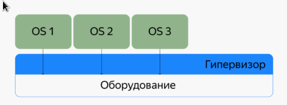
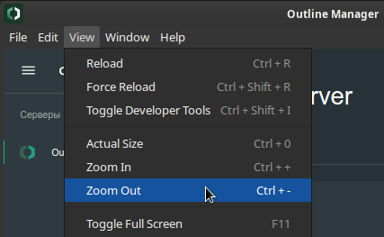
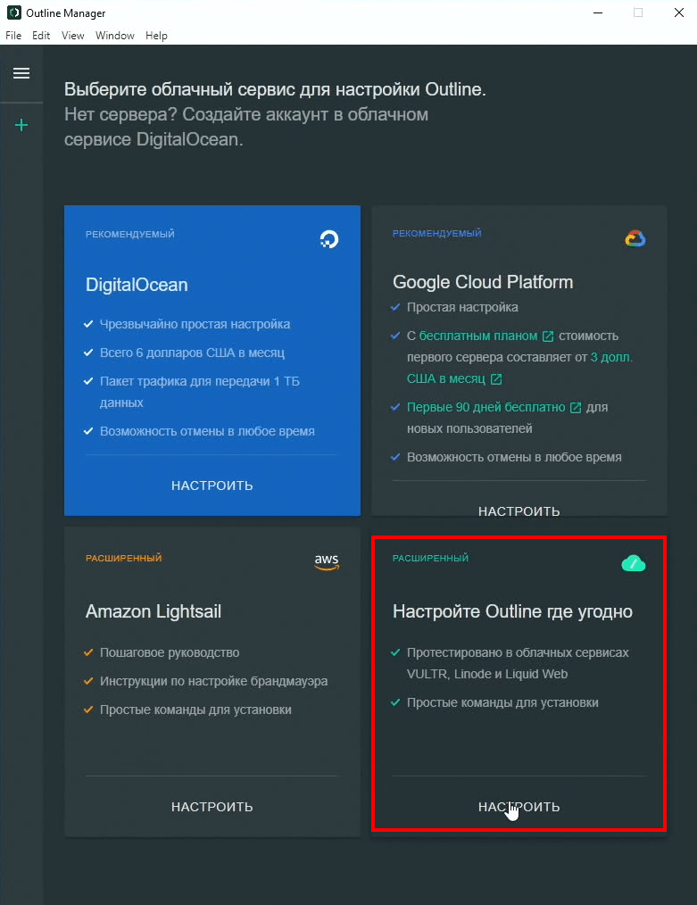
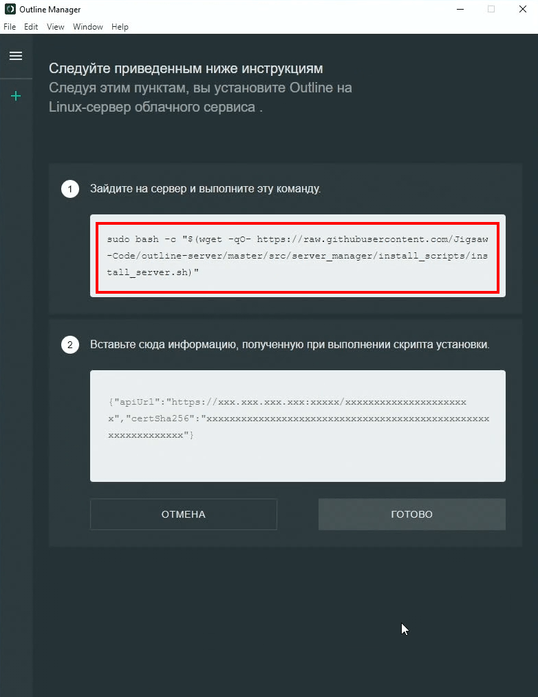
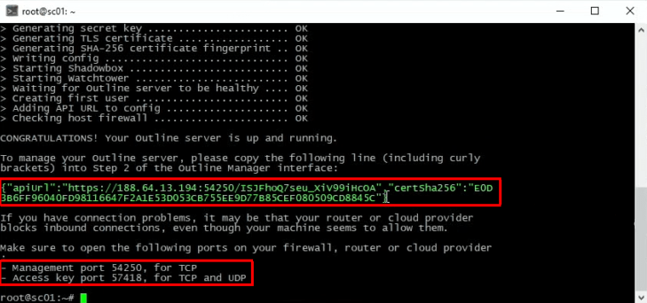
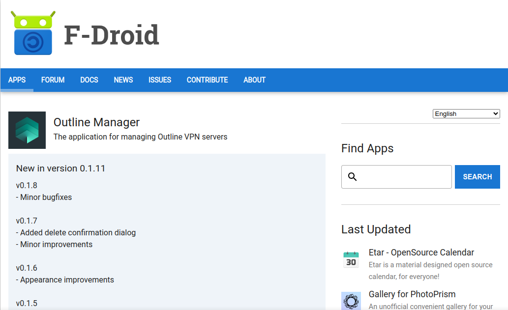
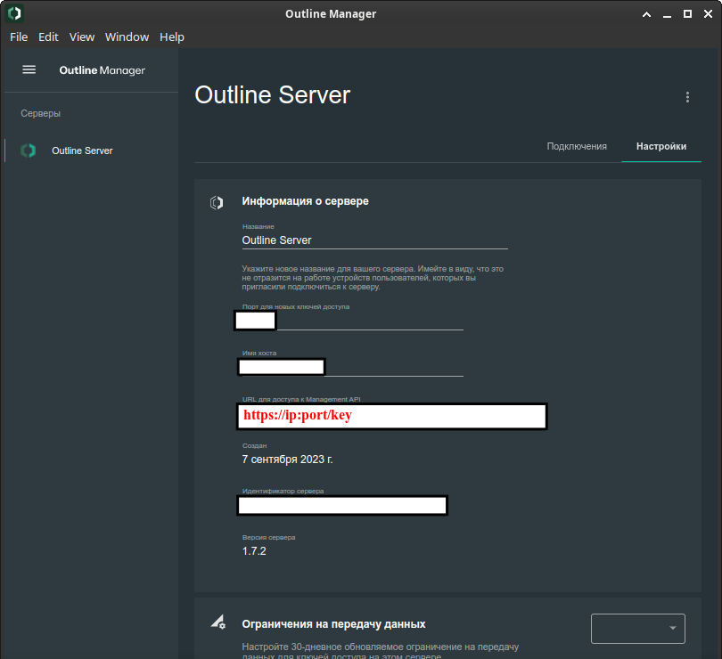

Базовые настройки серверов Linux
Хорош тот сервер, который настроен тщательно и с умом.
Введение.
Сервер Linux - это эффективный, мощный вариант операционной системы Linux с открытым исходным кодом (ОС). Серверы Linux созданы для удовлетворения постоянно растущих требований бизнес-приложений, таких как системное и сетевое администрирование, веб-службы и управление базами данных.
Многие так привыкли к Windows, что даже слышать про Linux не хотят, я имею в виду даже пользовательские варианты Linux с красивыми и удобными рабочими столами. И на вопрос, почему Вы не хотите использовать Linux? Все отвечают: «да он какой-то корявый!», «Программы, которые я использую в Windows не устанавливаются на Linux» и так далее. Но на самом деле всем пользователям, которые так категоричны к Linux, я хочу сказать, что Linux очень дружелюбная операционная система, и стоит всего лишь немного разобраться в ней и Вам все станет понятно.
Теперь я хочу перечислить некоторые преимущества Linux перед Windows, а также развеять некоторые мифы:
- Linux – абсолютно бесплатная операционная система (за исключением некоторых платных дистрибутивов), в отличие от Windows.
- В Linux практически отсутствуют вирусы. Они есть, но это скорее вопрос правильного разграничения прав доступа (между суперпользователем и пользователями - какие им выдаются права и на какое оборудование или ПО), не доверять чужому коду (сначала всё проверять, т.е. хотя бы мельком пролистывать, чтобы внутри не было зловредного влияния) и тщательности настройки безопасности вашего сервера, чтобы к нему было хотя бы сложно подобраться...
- Все кто говорит, что «Программы, которые я использую в Windows не устанавливаются на Linux», Вы задумайтесь, а зачем они должны устанавливаться!!! Ведь это совсем другая ОС, там свои программы! Также можно сказать и про Windows, что «программы которые работают в Linux не устанавливаются в Windows», для Linux существуют много своих программ не уступающим Windows-ким, также многие производители программного обеспечения выпускают свои продукты как для Windows, так и для Linux.
- Linux более производительней, тем более серверный вариант операционной системы. Объясняю, серверные операционные системы Linux без интерфейсные, а большую часть ресурсов (больше половины!!!) как раз занимает интерфейс ОС, т.е. визуальная оболочка (на сегодняшний день получили широкое распространение и версии Windows без графического интерфейса).
- ОС Linux, даже при самое корявой настройке, практически никогда не зависает (я имею в виду саму операционную систему). Например, все встречались с ситуацией, когда в Windows у Вас все замирает, Вы не можете не пошевелить мышкой, даже ctrl+alt+del нажать не можете, и Вам приходиться перезагружаться. Linux устроена таким образом что такая ситуация исключена, разве что в одном случае когда Вы сами вызываете такую ситуацию.
- Касаемо серверной ОС Linux она достаточно проста в конфигурирование, в отличие от аналогов Windows, в которых очень много всяких разных прибомбасов, в которых не так легко разобраться. Сама система Linux и все ее службы настраиваются путем редактирования конфигурационных файлов. Это обычные текстовые файлы, зная их расположение и формат, Вы сможете настроить любой дистрибутив, даже если у Вас под рукой нет никаких инструментов, кроме текстового редактора.
Я не хочу популяризировать ОС Linux и каким-то образом принижать Windows, но в большинстве случаев лучшего варианта как использование одного из дистрибутивов Linux не найти.
Предисловие
В данной большой статье рассматриваются базовые настройки серверов на различных дистрибутивах Linux. Статья пригодится для тех не всё помнит, может что-нибудь забыть, впервые настраивает или имеет пробелы в знаниях. Главное постоянно развиваться.
Все настройки проверены годами на многих дистрибутивах Linux.
Для всех примеров за основу берётся Debian 11 на VPS-сервере в сравнении на домашней виртуальной машине в Virtual Box. Однако, все настройки легко подойдут хоть на Archlinux, хоть на свеженький Ubuntu. Главное заменить один менеджер пакета на другой и подправить наименования некоторых утилит или библиотек, требующихся для установки. В некоторых дистрибутивах могут также измениться расположение файлов настроек в системе, но сами параметры остануться абсолютно одинаковыми.
Не обязательно следовать прямо по всем пунктам подряд, но с каждым пунктом безопасность вашего сервера будет на порядок расти. К тому же вы делаете более предсказуемое поведение любых сервисов, которые планируете установить. Если оставлять большинство параметров по умолчанию - велик шанс, что у вас что-нибудь может сразу и не заработать, т.е. с первой попытки. В этом случае вы, скорее всего, будете очень долго разбираться что и почему не работает так как вы этого хотели.
Вы можете использовать только те настройки, которые нужны вам здесь и сейчас и пропустить остальные. Безопасность, стабильность и предсказуемое поведение сервисов вашего сервера зависит только от вас. В любом случае - решать только вам.
Желаю вам удачи!
Теперь перейдем непосредственно к основам Linux Server.
Оглавление
- Настройка репозиториев в Debian и Ubuntu подобных дистрибутивах.
- Права доступа.
- Swap, swappiness.
- Настройки сетевых соединений.
- Настройка безопасности SSH соединений.
- Ловушка SSH.
- Форвардинг, sysctl.
- Конфликт портов или автозапуск из ниоткуда apache2.
- Apparmor.
- Настройка времени и локали.
- Настройка фаервола.
- Настройка Fail2ban.
- Настройка DNS.
- Установка и настройка wireguard.
- Docker, docker-compose.
- Nginx Reverse Proxy.
- Кэш память в Linux.
- Shadowsocks рядом с Wireguard.
«Podman», «Podman-Compose» и «Cockpit» рассмотрим в другой статье, т.к. он на порядок сложнее, чем «Docker» и «Docker-Compose» и в установке, и в настройке, и в использовании.
1. Настройка репозиториев в Debian и Ubuntu подобных дистрибутивах.
Обычно при запуске любого Linux сервера на Debian или Ubuntu подобных дистрибутивах Linux у вас всегда будут одинаковые настройки репозиториев.
Обычно одна единственная настройка всегда мешает обновлению сервера и в принципе любой установке. А именно - это наличие ссылки на CD или DVD диск репозитория, с которого производилась установка системы, в настройках репозиториев.
Чтобы её исправить нужно выполнить всего одну команду - открыть файл с настройкой и закоментировать строку с этой ссылкой, сохранить и закрыть файл.
# Регистрируемся как суперпользователь, если вы входили под каким-нибудь обычным пользователем, например, когда система установлена вами самими, а не хостингом, или на вашем оборудовании $ su $ nano /etc/apt/sources.list # deb cdrom ... CTRL + o CTRL + x
Всё можно обновлять список пакетов.
$ apt update
2. Права доступа.
Обычно при запуске любого VPS или VDS сервера на любом дистрибутиве Linux у вас всегда будет только один суперпользователь. Если вы самостоятельно устанавливали систему, то наверняка указывали какого-нибудь пользователя.
В случае же когда у вас только один суперпользователь лучше сразу разграничить права доступа с помощью создания пользователей. Позже это разграничение поможет в настройке безопасности SSH-соединений. И ваш сервер станет чуточку безопаснее.
Но самое главное вот в чём:
Когда у вас есть некий пользователь с ограниченным набором прав доступа к вашему серверу, пусть даже если у вас будет использоваться вход только по паролю на ваш сервер через SSH-соединение, то даже если ваш пароль взламают - злоумышленникам ещё предстоит потрудится взломать пароль суперпользователя, чтобы получить полный контроль над сервером. В случае же, когда у вас только один суперпользователь - злоумышленники значительно легче забирают ваш сервер себе, сразу меняют все пароли и доступы.
И вы больше ничего и никогда не сможете сделать.
Кроме, как обратиться в тех-поддержку и полностью всё переустановить, удалив и полностью потеряв всё содержимое вашего сервера, т.к. злоумышленники наверняка уже к тому времени либо скомпрометируют ваши данные, либо заразят зловредным кодом.
Поэтому обязательно настраивайте себе отдельного пользователя с ограниченным набором прав доступа, руководствуясь этим пунктом.
Для начала необходимо установить утилиту sudo (она предназначена для того, чтобы делегировать привелегированные ресурсы пользователем с ведением протокола работы), создать группу привелегированного доступа (хотя это и не обязательно), дать группе соответствующие права доступа, создать пользователя и добавить пользователя в эту группу.
Команды выполняются от имени суперпользователя: «$ su».
# Устанавливаем sudo $ apt install sudo -y # Добавляем группу. Там уже в принципе есть нужная группа («sudo»), но мне, например, понятнее со своей группой, а не системной. $ /usr/sbin/groupadd wheel # Создаем пользователя и сразу добавляем в созданную группу $ /usr/sbin/useradd myuser -m -g users -G wheel,users -s /bin/bash # Меняем пароль пользователя $ passwd myuser # Добавляем группу wheel в sudo файл в самом конце $ nano /etc/sudoers %wheel ALL=(ALL:ALL) ALL CTRL + o CTRL + x
Теперь, перезагрузите ваш сервер.
Если вам необходимо можно добавить пользователю необходимые дополнительные полномочия. Вот список групп с описаниями полномочий. Обратите внимание, что в разных дистрибутивых могут быть разные наборы групп с соответствующими полномочиями. Т.е. каких-то групп может и не быть. Поэтому обязательно проверьте есть ли вообще в системе такая группа.
Проверим существование группы, например администрирования - adm. Естественно, проверка выполняется от имени суперпользователя.
$ cat /etc/group | grep -Ei "adm"
Переходим к спискам групп и полномочий.
| adm | Администрирование |
| ftp | Доступ к файлам FTP |
| games | Доступ к игровым программам |
| http | Доступ к файлам HTTP |
| log | Доступ к лог-файлам, syslog-ng |
| rfkill | Управление питанием беспроводных устройств |
| sys | Администрирование принтеров CUPS |
| systemd-journal | Доступ к журналам systemd |
| users | Стандартная группа пользователей |
| uucp | Доступ к устройствам RS-232 |
| dbus | Используется внутри dbus. |
| kmem | Доступ к виртуальной памяти ядра |
| locate | Доступ к быстрому поиску файлов по имени |
| lp | Доступ к устройствам параллельного порта |
| Доступ к почтовым клиентам | |
| nobody | Непривилигированная группа |
| proc | Доступ к информации о процессах |
| smmsp | sendmail группа |
| tty | Доступ к последовательным и параллельным портам |
| utmp | Полные представления о пользователях системы |
| audio | Прямой доступ к звуковому оборудованию |
| disk | Доступ к блочным устройствам |
| floppy | Доступ к флоппи-дискам |
| input | Доступ к устройствам ввода |
| kvm | Доступ к виртуальным машинам KVM |
| optical | Доступ к CD, DVD, ISO |
| scanner | Доступ к сканерам |
| storage | Доступ к съемным дискам |
| video | Доступ к устройствам захвата видео |
Добавляем пользователя во все необходимые группы одной командой.
$ sudo /usr/sbin/usermod -aG audio,video myuser
Если не получается, можно добавить в каждую группу по очерди, т.е. по одной.
$ gpasswd -a myuser audio
$ gpasswd -a myuser video
3. Swap, swappiness.
SWAP – один из механизмов виртуальной памяти, при котором отдельные фрагменты памяти перемещаются из ОЗУ в так называемые области подкачки (swap area или swap space), расположенные на вторичном хранилище данных (отдельный дисковый раздел или просто файл в файловой системе), освобождая ОЗУ для загрузки других активных фрагментов памяти.
У файла подкачки существуют параметры, которые сообщают ОС, как часто его нужно использовать. Это явление называется «свопингом» и может иметь значение в пределах 0 - 100. Если это значение ближе к 100, ядро будет перемещать в раздел подкачки больше информации чтобы освободить память. При значениях ближе к нулю, система будет использовать подкачку только при крайней необходимости.
К примеру, в версии Ubuntu Linux для рабочего стола устанавливается параметр 60, а в серверных редакциях операционной системы - 1.
Существует много споров - нужен ли swap вообще. Когда у вас большое количество оперативной памяти - то такой раздел может быть и не нужным, а если есть, то скорее всего никогда не будет использоваться.
НО! Обратите внимание!
Если swappinses у вас стоит по умолчанию, то скорее всего при заполнении оперативной памяти всего лишь на 40% - система потребует swap раздел, если система не находит такой раздел - то создаёт его автоматически. Естественно, если у вас твердотельный накопитель - скорость не сильно упадёт и вы можете даже ничего толком и не заметить. Однако, если у вас жесткий диск - даже в Linux могут ощущаться тормоза. Да, даже в Linux. Я такое несколько раз видел.
Самое интересное в том, что на любых VPS или VDS серверах swap раздела в принципе не существует, т.е. его никогда не создают, а swappines по умолчанию установлен на 60.
Давайте исправлять этот момент. Посмотрим сколько у нас оперативной памяти, есть ли вообще swap, если нет, то создадим.
В VPS и VDS серверах лучше хотя бы создать файл подкачки в корне системного раздела, т.к. менять структуру диска во избежании проблем с последним не рекомендуется. На своих серверах заранее продумывайте стркутукру и создавайте такой раздел, хотя бы, в 2 ГБ. О размерах такого раздела уже говорилось ранее в одной из предыдущих статей.
# Смотрим на всю оперативную память $ free -h # Проверяем swap $ sudo swapon --show # Создаем файл подкачки, форматируем и подключаем $ sudo fallocate -l 2G /swapfile $ sudo chmod 600 /swapfile $ sudo mkswap /swapfile $ sudo swapon /swapfile # Проверяем $ sudo swapon --show
Создали и подключили. Однако после перезагрузки системы он не подключиться автоматически. Сделаем это.
$ sudo nano /etc/fstab /swapfile none swap defaults,discard 0 0 CTRL + o CTRL + x
Теперь займемся настройкой swappiness.
Посмотрим сколько у нас установленно на данный момент.
$ sudo cat /proc/sys/vm/swappiness
Установим временное значение до перезагрузки системы.
$ sudo sysctl vm.swappiness=10
Установим значение постоянным.
$ sudo nano /etc/sysctl.d/00-sysctl.conf vm.swappiness=10 CTRL + o CTRL + x
4. Настройки сетевых соединений.
Обычно в VPS или VDS серверах настраивать сетевые интерфейсы не просто не требуется, а в принципе не рекомендуется. В домашнем сервере - будь то реальный ПК или виртуальная машина, такая настройка чаще всего просто необходима, чтобы не в роутере настраивать IP адреса ваших домашних ПК, а только на сервере. В организациях же чаще всего такая настройка тоже необходима, т.к. сам сервер и раздает всем ПК в сети IP адреса из заданного диапазона.
Поэтому рассмотрим только базовую настройку того, что вам точно пригодится.
Если какие-то команды не выполняются просто допишите к ним следующую строку: «/usr/sbin/». Дело в том, что почти во всех Debian или Ubuntu подобных дистрибутивах ссылки на многие утилиты перенесли именно в этот каталог, но не стали добавлять эти же ссылки в базовый путь по умолчанию. И также возможно, что данные утилиты просто не установлены в систему. Это вполне нормальное явление. В качестве примера - всеми любимая утилита ifconfig.
Доустановим всего, что нам не хватает.
$ sudo apt install curl gnupg wget bash-completion net-tools git -y
Теперь все необходимые утилиты точно есть в «/usr/sbin/».
Далее мне понадобится ip-калькулятр. Можно было бы посчитать подсети вручную, но лично мне лень и я воспользуюсь специальным калькулятором.
$ sudo apt install ipcalc -y # Пользоваться примерно так $ ipcalc 192.168.0.100/24
Теперь посмотрю какой мне на моем VPS выдал IP адрес провайдер, а также маску, вещательный адрес и шлюз по умолчанию. Просто, чтобы не потерять доступ их же и буду вводить в ручных настройках сети. На домашнем сервере или в организации, скорее всего, такой адрес будет выбран системным администратором самостоятельно, а не выдан неким маршрутизатором, чтобы не лазить в настройки маршрутизатора или роутера. Такое необходимо когда доступа к самому роутеру или маршрутизатору нет, а вы при этом всё равно хотите установить фиксированный ip-адрес.
Для примера, пусть ответ будет как на домашней виртуальной машине.
$ /usr/sbin/ifconfig ... enp0s3: ... inet 192.168.0.110 netmask 255.255.255.0 broadcast 192.168.0.255 ... $ sudo route Kernel IP routing table Destination Gateway Genmask Flags Metric Ref Use Iface default 192.168.0.1 0.0.0.0 UG 0 0 0 enp0s3 ...
Записываем.
- 192.168.0.110 - ipv4.
- 255.255.255.0 - маска.
- 192.168.0.255 - вещательный адрес.
- 192.168.0.1 - шлюз по умолчанию.
Проверяем через ip-калькулятор - на всякий случай. Вдруг что-нибудь где-нибудь введёте неправильно, ошибётесь на одну единственную циферку - из-за чего можете даже потерять доступ. Такие настройки лучше лишний раз перепроверить, т.е. перепроверить самого себя и убедиться что всё сделано правильно и без ошибок.
$ ipcalc 192.168.0.110/24 Address: 192.168.0.110 11000000.10101000.00000000. 01101110 Netmask: 255.255.255.0 = 24 11111111.11111111.11111111. 00000000 Wildcard: 0.0.0.255 00000000.00000000.00000000. 11111111 => Network: 192.168.0.0/24 11000000.10101000.00000000. 00000000 HostMin: 192.168.0.1 11000000.10101000.00000000. 00000001 HostMax: 192.168.0.254 11000000.10101000.00000000. 11111110 Broadcast: 192.168.0.255 11000000.10101000.00000000. 11111111 Hosts/Net: 254 Class C, Private Internet
- HostMin - шлюз. Верно.
- Broadcast - вещательный адрес. Тоже верно.
- Netmask - маска сети. Верно.
- Address - ip адрес присвоенный провайдером, маршрутизатором или выбранный вами самими.
В домашней сети я могу выбрать любой другой адрес в той же подсети. В организации надо смотреть на наличие свободных, т.е. не занятых, адресов в имеющейся подсети. В VPS и VDS серверах менять их ни в коем случае нельзя! Именно поэтому и нужно было узнать все эти параметры. Теперь можно вручную указать их в настройках сетевой конфигурации.
Вот теперь можно переходить к настройкам интерфесов.
$ sudo nano /etc/network/interfaces ... allow-hotplug enp0s3 auto enp0s3 # iface enp0s3 inet dhcp iface eth1 inet static address 192.168.0.110 netmask 255.255.255.0 gateway 192.168.0.1 broadcast 192.168.0.255 # dns-nameservers 192.168.0.1 8.8.8.8 # pre-up ifconfig enp0s3 hw ether xx:xx:xx:xx:xx:xx # pre-up ip link set enp0s3 address xx:xx:xx:xx:xx:xx ... # Сохраняем и выходим CTRL + o CTRL + x $ sudo systemctl restart networking # Но лучше бы было просто перезагрузить сервер и снова войти по ssh
Параметр «dns-nameservers» закоментирован и отвечает за настройку DNS-серверов для данного сетевого адаптера. Однако, здесь dns-сервера никогда не указывают, потому что это не совсем правильно, хотя и вполне возможно. Об этом будет подробнее рассказано в другой главе.
Настройка «pre-up» отвечает за запуск дополнительных параметров в зависимости от состояния сетевого адаптера. Например, смена мак-адреса перед запуском интерфейса. В данном случае указны 2 способа смены - утилитой из «net-tools» и встроенной. Их можно указывать несколько штук построчно, и даже одинаковые состояния в каждой из строк. Также сюда же можно вносить дополнительные iptables правила, которые должны быть вставлены при запуске того или иного интерфейса. Например, перед запуском интерфейса добавлять правила, а после отключения удалять. Или же, например записать все iptables правила добавления в один скрипт, правила удаления в другой скрипт и укаждый из этих скриптов указать в соответствующих строках перед запуском интерфейса и после отключения интерфейса.
Вот список состояний, которые могут вам пригодиться.
- pre-up - Выполнить команду перед запуском интерфейса.
- post-up - Выполнить команду после запуска интерфейса.
- pre-down - Команда перед отключением.
- post-down - Команда после отключения.
Если вы что-нибудь меняете вручную - вот список параметров, которые можно использовать в ручных, а не скриптовых, настройках.
- iface - Указывает имя интерфейса.
- up - Выполнить команду при запуске интерфейса.
- auto - автоматический запуск интерфейса.
- inet - Указывает description такие как static, dhcp или manual.
- address - Устанавливает ip адрес для статического соединения.
- netmask - Установка маски сети.
- broadcast - Широковещательный адрес.
- metric - Приоритет для шлюза по умолчанию.
- gateway - Шлюз по умолчанию.
- hwaddress - Установить MAC адрес.
- mtu - Размер одного пакета.
6. Ловушка SSH.
Не секрет, что интернет — очень враждебная среда. Как только вы поднимаете сервер, он мгновенно подвергается массированным атакам и множественным сканированиям. Фактически, на среднем сервере 99% трафика может быть вредоносным.
Tarpit — это порт-ловушка, который используется для замедления входящих соединений. Если сторонняя система подключается к этому порту, то быстро закрыть соединение не получится. Ей придётся тратить свои системные ресурсы и ждать, пока соединение не прервётся по таймауту, или вручную разрывать его.
Чаще всего тарпиты применяют для защиты. Технику впервые разработали для защиты от компьютерных червей. А сейчас её можно использовать, чтобы испортить жизнь спамерам и исследователям, которые занимаются широким сканированием всех IP-адресов подряд.
Одному из сисадминов по имени Крис Веллонс, видимо, надоело наблюдать за этим безобразием — и он написал маленькую программку «Endlessh», тарпит для SSH, замедляющий входящие соединения. Программа открывает порт (по умолчанию для тестирования указан порт «2222») и притворяется SSH-сервером, а на самом деле устанавливает бесконечное соединение с входящим клиентом, пока тот не сдастся. Это может продолжаться несколько дней или больше, пока клиент не отвалится.
В предыдущем пункте вы настраивали ваш SSH-сервер, и надеюсь всё-таки поменяли порт по умолчанию на какой-нибудь другой. Затем в фаерволе открыли именно этот другой порт. Чтобы ловушка работала для неё надо будет в фаерволе открыть порт на котором она будет работать. Пускай на порту по умолчанию - 22.
Обратите внимание на один момент перед тем, как будете или не будете использовать эту утилиту!
Открывать лишний порт в любом фаерволе - не слишком безопасно. Если вы добавляли отдельного обычного пользователя с ограниченными правами доступа и правильно настроили безопасность SSH-соединений только по SSH-ключам + обязательно использовали фаервол Firewalld и Fail2ban - то такая ловушка вам, скорее всего, будет и не нужна вообще. НО, если у вас используется вход по паролям - лучше, если вы откроете этот лишний порт в вашем фаерволе. Допустим, настоящий SSH-сервер, тогда будет на неком отличном от 22 порту (например, 2222) - то лучше, если ловушка при этом будет работать именно на 22 порту.
Установка утилиты.
Само собой, если вы ещё не устанавливали «docker» и «docker-compose» - пока что пропустите этот пункт и вернитесь к нему, как только установите.
Интернет предлагает установить утилиту напрямую 2-мя способами - с помощью установки и настроки пакета, который есть в Debian репозиториях и клонировать репозиторий.
Вы можете выбрать любой из этих способов, найти их в интернете и использовать. У каждого способа есть свои достоинства и недостатки. Что-то может заработать с первого раза, или наоборот не заработать вообще и вы просто промучаетесь пытаясь установить этими способами.
Я же предлагаю несколько более универсальный подход - используя docker-контейнер. В этом случае утилита точно заработает с первого раза.
Создадим для этой утилиты отдельную папку и запустим контейнер.
$ mkdir -p endlessh && cd endlessh
$ nano docker-compose.yml
---
version: "3.4"
services:
endlessh:
image: harshavardhanj/endlessh:alpine
container_name: endlessh
ports:
- "22:2222"
restart: unless-stopped
# Сохраняем и выходим
CTL + o
CTRL + x
# Запускаем, ждем когда запуститься и проверяем.
$ sudo docker-compose up -d
$ sudo docker ps
Разумеется, не забудьте поменять порт в вашем sshd_config и открыть оба порта в вашем фаерволе во входной зоне из интернета.
В данном конкретном примере - это 2222 и 22.
Если вам нужны подробности по установке или работе данной ловушки, то можете посмотреть о ней исчерпывающий ролик на youtube канале «#linux life».
7. Форвардинг, sysctl.
sysctl — в BSD и Linux — программа, предназначенная для управления отдельными параметрами ядра, безопасности, сетевой подсистемы. Позволяет определять и задавать такие параметры как размер сегмента разделяемой памяти, ограничение на число запущенных процессов, а также включать функции наподобие маршрутизации.
Имеет конфигурационный файл /etc/sysctl.conf, в котором переопределяются необходимые параметры.
Для начала сделаем его бэкап следующей командой:
$ sudo cp /etc/sysctl.conf /etc/sysctl.conf.back
Значение sysctl загружаются во время загрузки системы из файла /etc/sysctl.conf. В этом файле могут быть пустые строчки, комментарии (строки, начинающиеся на символ «#» или точку с запятой), а также строки в формате «переменная=значение». Если вы хотите применить его в любой момент времени, вы можете сделать это с помощью команды «sysctl -p».
О каждом из параметров вы можете почитать вот в этой «статье». Я же расскажу о наиболее часто применяемых.
- включить пересылку IP-пакетов (ipv4, ipv6).
- net.ipv4.ip_forward = 1
- net.ipv4.conf.all.forwarding = 1
- net.ipv6.conf.all.forwarding = 1
- net.ipv6.conf.default.forwarding = 1
- Позволяет осуществлять фильтрацию пакетов по адресу назначения (проверка адреса получателя).
- net.ipv4.conf.all.rp_filter = 1
- Включает/выключает проксирование arp-запросов для заданного интерфейса. ARP-прокси позволяет маршрутизатору отвечать на ARP запросы в одну сеть, в то время как запрашиваемый хост находится в другой сети. С помощью этого средства происходит обман отправителя, который отправил ARP запрос, после чего он думает, что маршрутизатор является хостом назначения, тогда как в действительности хост назначения находится на другой стороне маршрутизатора. Маршрутизатор выступает в роли уполномоченного агента хоста назначения, перекладывая пакеты от другого хоста.
- net.ipv4.conf.default.proxy_arp = 1
- net.ipv4.conf.all.proxy_arp = 1
- Включает/выключает выдачу ICMP Redirect другим хостам. Эта опция обязательно должна быть включена, если хост выступает в роли маршрутизатора любого рода. Как правило ICMP-сообщения о переадресации отправляются в том случае, когда необходимо сообщить хосту о том, что он должен вступить в контакт с другим сервером. Переменная может иметь два значения 0 (выключено) и 1 (включено). Значение по-умолчанию 1 (включено). Если компьютер не выступает в роли маршрутизатора, то эту переменную можно отключить.
- net.ipv4.conf.default.send_redirects = 1
- net.ipv4.conf.all.send_redirects = 0
- Отключения поддержки IPv6.
- net.ipv6.conf.all.disable_ipv6 = 1
- net.ipv6.conf.default.disable_ipv6 = 1
- net.ipv6.conf.lo.disable_ipv6 = 1
Вот все указанные настройки. Благо у меня на VPS сервере не используется IPV6, поэтому я его отключу. При необходимости, смогу зайти через ssh, закоментировать соответствующие строки и перезагрузить правила соответствующей командой.
$ sudo nano /etc/sysctl.conf net.ipv4.ip_forward=1 net.ipv4.conf.all.forwarding=1 net.ipv6.conf.all.forwarding=1 net.ipv6.conf.default.forwarding = 1 net.ipv4.conf.all.rp_filter = 1 net.ipv4.conf.default.proxy_arp = 1 net.ipv4.conf.all.proxy_arp=1 net.ipv4.conf.default.send_redirects = 1 net.ipv4.conf.all.send_redirects = 0 net.ipv6.conf.all.disable_ipv6 = 1 net.ipv6.conf.default.disable_ipv6 = 1 net.ipv6.conf.lo.disable_ipv6 = 1 # Сохраняем и выходим CTRL + o CTRL + x # Принимаем правила без перезагрузки ОС. $ sudo sysctl -p
8. Конфликт портов или автозапуск из ниоткуда apache2.
Иногда, не только в VPS или VDS, но и при установке на домашний ПК или в организации при установке совершенно нового образа Debian или Ubuntu может встретиться такая ситуация - когда вы попросту не можете запустить какой-либо сервис на выбранном порту.
Я встретился с ситуацией, когда на совершенно новом дистрибутиве Debian 11 не cмог запустить только что установленный nginx на 80 порту.
Что делать в таком случае?
Во первых отследить - сервис, который перекрывает вам доступ, а точнее порт сервиса.
$ sudo netstat -tlnp
Команда покажет все запущенные процессы и прослушиваемые порты. По портам сможете найти интересующий вас сервис. В последнем столбце как раз и увидете наименование сервиса, который портит вам жизнь.
Теперь необходимо именно выключить найденый сервис, а не просто убить процесс. В моём случае это был сервис apache2.
$ sudo update-rc.d apache2 disable
9. Apparmor.
AppArmor - программный инструмент упреждающей защиты, основанный на политиках безопасности, которые определяют, к каким системным ресурсам и с какими привилегиями может получить доступ то или иное приложение. В AppArmor включён набор стандартных профилей, а также инструменты статического анализа и инструменты, основанные на обучении, позволяющие ускорить и упростить построение новых профилей.
Т.е. AppArmor - это реализация Модуля безопасности линукс по управлению доступом на основе имен. AppArmor ограничивает отдельные программы набором перечисленных файлов и возможностями в соответствии с правилами Posix 1003.1e.
AppArmor устанавливается и загружается по умолчанию. Он использует профили приложений для определения какие файлы и права доступа требуются приложению.
AppArmor является важным элементом безопасности, который по умолчанию включен в Ubuntu начиная с версии Ubuntu 7.10. Тем не менее, AppArmor работает в фоновом режиме, поэтому Вы можете не знать, что это такое и что AppArmor делает.
AppArmor блокирует уязвимые процессы, ограничивая уязвимость в системе безопасности, которая может возникнуть из-за уязвимости этих процессов. AppArmor можно также использовать для того, чтобы заблокировать Mozilla Firefox для повышения безопасности, но по умолчанию это не делается.
Например, одним из приложений, для которого по умолчанию в Ubuntu задано такое ограничение, является Evince — программа просмотра файлов PDF. Когда Evince работает под вашей пользовательской учетной записью, он может выполнять только вполне определенные действия. Для Evince предоставлены минимальные права доступа, необходимые только для запуска и работы с документами PDF. Если при рендеринге PDF с помощью Evince или при открытии вредоносного PDF, который хочет перехватить управление от Evince, были обнаружены уязвимости, AppArmor сможет ограничить ущерб, который может нанести Evince. В традиционной модели безопасности Linux для Evince будет разрешен доступ ко всему тому, к чему у вас есть доступ. При использовании AppArmor, доступ имеется только к тем вещам, которые требуются программе для просмотра PDF.
AppArmor, в частности, полезен для ограничения работы программ, в которых могут быть экспойты, например, веб-браузера или серверного программного обеспечения.
Для просмотра текущего состояния AppArmor, выполните в терминале следующую команду.
$ sudo apparmor_status
Вы также можете заметить, что AppArmor поставляется с профилем для Firefox - это файл usr.bin.firefox, находящийся в каталоге /etc/apparmor.d. По умолчанию он не включен, так как в нем для Firefox задано слишком много ограничений и из-за этого могут возникать проблемы. В каталоге /etc/apparmor.d/disable имеется ссылка на этот файл, что указывает, что этот профиль отключен.
Чтобы включить профиль Firefox и с помощью AppArmor ограничить действия, выполняемые Firefox, выполните следующие команды.
$ sudo rm /etc/apparmor.d/disable/usr.bin.firefox
$ cat /etc/apparmor.d/usr.bin.firefox | sudo apparmor_parser –a
После выполнения этих команд, снова запустите команду sudo apparmor_status и вы увидите, что теперь загружены профили для Firefox.
Чтобы отключить профиль Firefox в случае, если из-за него возникают проблемы, выполните следующие команды.
$ sudo ln -s /etc/apparmor.d/usr.bin.firefox /etc/apparmor.d/disable/
$ sudo apparmor_parser -R /etc/apparmor.d/usr.bin.firefox
Создать профиль для AppArmor не так сложно как кажется на первый взгляд. Для этого в системе существует несколько утилит. Но для начала давайте рассмотрим синтаксис файла, чтобы было понятно с чем мы имеем дело. Возьмем опять же файл от man.
include <tunables/global>
/usr/bin/man {
#include <abstractions/base>
#include <abstractions/nameservice>
capability setgid,
capability setuid,
/usr/bin/man r,
/usr/lib/man-db/man Px,
}
Основу профиля составляют адреса файлов, к которым программа может иметь доступ, а также разрешения для этих файлов. Синтаксис такой.
/адрес/файла права
Доступны такие права.
- r - разрешить чтение
- w - разрешить запись
- a - разрешить запись в конец файла
- px - разрешить запуск новых процессов если для них есть профиль
- Px - разрешить запуск новых процессов, если для них есть профиль и стереть переменные окружения
- ix - разрешить запуск нового процесса под профилем текущего
- m - разрешить загружать исполняемые файлы в память и запускать
- l - разрешить создавать символические ссылки на исполняемые файлы
- k - разрешить блокировать файлы
- ux - не контролировать новые процессы
- Ux - не контролировать новые процессы и очистить переменные окружения.
Этих полномочий вполне достаточно, для управления правами, но кроме списка файлов и их полномочий, файл профиля содержит еще директивы include и capability.
include позволяет включать другие файлы с разрешениями, они находятся в папке /etc/apparmor.d/abstractions/. Это такие же части профиля, со списком файлов и правами доступа. Они облегчают создание новых профилей.
С capability все немного сложнее. Программа может обращаться к ядру с помощью системных вызовов, эти вызовы Apparmor тоже контролирует. Посмотреть все доступные вызовы вы можете командой man capabilities. В нашем случае мы разрешаем процессу задать свой uid и gid, то есть сменить пользователя и группу, от которого он запущен.
Есть еще папка /etc/apparrmor.d/thunables с переменными, которые могут использоваться в каждом профиле. Но с ними разберемся по ходу. Теперь вы готовы к тому, чтобы создать профиль apparmor. Для примера будем создавать новый профиль для утилиты free. Напомню, что эта утилита показывает доступную оперативную память.
Сначала выполните такую команду, чтобы инициализировать шаблон профиля.
$ sudo aa-autodep free
Шаблон профиля создан, можете его посмотреть, теперь нужно выполнить профилирование программы, чтобы посмотреть какие ей файлы нужны и добавить их в профиль.
$ sudo aa-genprof free
Программа может попросить что запустить в отдельном окне терминала, и выполнить все действия, которые она может делать, затем нажать S.
Готово, теперь нажимаем F, чтобы завершить работу утилиты.
Если вы меняли профиль вручную, то его необходимо перезагрузить, чтобы изменения вступили в силу, для этого используйте команду.
$ sudo aa-parser имя_профиля -a
Перезагрузить все профили можно командой.
$ sudo service apparmor reload
Вообще, docker использует AppArmor для защиты, притом Docker Engine сам генерирует дефолтный профиль для AppArmor при запуске контейнера. Другими словами, вместо.
$ docker run --rm -it hello-world
запускается.
$ docker run --rm -it --security-opt apparmor=docker-default hello-world
Вообще, AppArmor не рекомендуется отключать, но бывает, что это необходимо - например из-за конфликта доступа, или потому что он потребляет слишком много оперативной памяти...
Если вам больше не нужен Apparmor и вы не не хотите, чтобы программа тратила системные ресурсы или хотите просто отключить ее для отладки, это можно сделать следующей командой.
$ sudo systemctl stop apparmor && sudo systemctl disable apparmor && sudo systemctl mask apparmor
Включить обратно можно аналогичной командой.
$ sudo systemctl unmask apparmor && sudo systemctl enable apparmor && sudo systemctl start apparmor
10. Настройка времени и локали.
Настройка и синхронизация времени.
10.1. Синхронизация timesyncd.
Системное время - важный параметр в работе сервера, так как на него завязаны почти все службы. Сегодня мы рассмотрим с вами, как настроить время в сервере Debian - установить его, указать или сменить часовой пояс, а так же настроить автоматическое обновление.
Во время установки Debian, сервер автоматически настраивает системное время на основе информации из bios. Инсталлятор предлагает вам выбрать только часовой пояс. При этом, если вы не правильно указали часовой пояс (timezone), его без проблем можно изменить после установки.
Так же ситуация, когда необходимо изменить время или часовой пояс, может возникнуть, если вы арендуете сервер за границей и вам разворачивают систему из готового образа. В таком случае timezone может быть указана не такая, как вы хотите.
Зачем, собственно, следить за точным временем на сервере, кроме непосредственно удобства восприятия этого времени? Причин может быть много.
- Для корректного логирования всех событий и последующего расследования инцидентов. Более того, одинаковое время должно быть на всех серверах, которые участвуют в работе.
- В доменной середе Windows для корректной работы протокола аутентификации Kerberos требуется примерно одинаковое время на всех участниках домена. Если ваш сервер Debian является членом домена, важно, чтобы его время не сильно отличалось от времени контроллера домена. Его нужно обязательно синхронизировать с ним.
- На сервере может располагаться какой-то сервис, который взаимодействует с пользователями. Если неправильно настроить часы или timezone, может возникнуть ситуация, когда для некоторых пользователей материалы будут отображаться со временем из будущего.
- Планировщик cron в своей работе использует системные часы. Если вы хотите предсказуемое поведение запланированных задач, время и часовой пояс должны быть настроены правильно.
Сначала посмотрим на системное время.
$ date
Сразу видим часовой пояс, дату и время в 12-ти или 24 часовом формате. Если у вас отображается 12-ти часовой формат добавьте +%R к date.
$ date +%R
Подобные параметры удобно использовать в скриптах.
$ date +%Y-%m-%d
$ date +%H-%M-%S
$ date +%Y-%m-%d_%H-%M-%S
$ date +%H-%M_%d.%m.%Y
Чтобы увидеть более подробную информацию о состоянии воспользуемся другой командой.
$ timedatectl status
Для того, чтобы вручную установить дату, используем упомянутую выше команду date, только уже с дополнительными параметрами.
$ sudo date 04220900
Здесь 04 — месяц, 22 — число, 09 — час, 00 — минут. Таким образом, формат команды получился вот такой - date MMDDhhmm.
То же самое, только через timedatectl.
$ sudo timedatectl set-time "2023-04-22 08:45:00"
Если вы получили ошибку - Failed to set time: Automatic time synchronization is enabled, значит у вас уже настроено автоматическое обновление времени. В таком случае timedatectl, в отличие от date, время менять не будет.
В моем случае timezone установлена как MSK, то есть московский часовой пояс. Если у вас указан другой часовой пояс, а вы, к примеру, хотите установить московский, то делается это просто. Смена часового пояса выполняется через timedatectl.
# Перед настройкой или изменением часового пояса, рекомендуется обновить список timezone на сервере. $ sudo apt update && sudo apt upgrade tzdata # Список всех timezоne, доступных для установки на сервере $ timedatectl list-timezones # Устанавливаем выбранную зону $ sudo timedatectl set-timezone Europe/Moscow # Включаем автообновление времени $ sudo timedatectl set-ntp true
В большинстве современных дистрибутивов с systemd служба синхронизации времени уже присутствует в дефолтной установке и реализуется через systemd-timesyncd. Эта служба призвана заменить ntpd. Со слов разработчиков, она легче и быстрее, чем ntpd, плюс интегрирована в systemd, поэтому для автоматической синхронизации времени рекомендуется использовать именно ее.
Тут важно понимать, что systemd-timesyncd не может работать в качестве сервера времени. Так что, если у вас одиночный сервер, вам вполне подойдет timesyncd. Если же вы хотите использовать свой сервер времени, то надо настраивать ntp.
Посмотрим на службу timesyncd.
$ timedatectl timesync-status
# Для надежности, можно убедиться, что служба работает, плюс, добавим ее сразу в автозагрузку, если ее там нет.
$ sudo systemctl status systemd-timesyncd
$ systemctl enable systemd-timesyncd
Список серверов для синхронизации времени в timedatectl настраивается в конфигурационном файле «/etc/systemd/timesyncd.conf». В случае, когда вы используете timesyncd, а не ntp, то сервера будут браться из этого файла.
Если у вас возникают ошибки при попытке синхронизировать время, возможно настройка этого файла поможет решить проблему.
В этом файле нас интересуют 2 строки: «NTP» и «FallbackNTP». Раскомментируйте их. Первая стркоа отвечает за сервера по умолчанию, вторая за сервера, если не удалось установить соединение с первыми.
Итак, вот пример конфигурации, например, Российской федерации. Сервера можно посмотреть на официальном сайте: «ntppool.org». Самое интересное в том, что сервера можно выбирать как с суб-зонами, так и без суб-зон.
NTP=0.ru.pool.ntp.org 1.ru.pool.ntp.org 2.ru.pool.ntp.org 3.ru.pool.ntp.org FallbackNTP=0.arch.pool.ntp.org 1.pool.ntp.org 2.europe.pool.ntp.org 3.asia.pool.ntp.org
Пробуем синхронизироваться.
$ sudo timedatectl set-ntp true
10.2. Синхронизация времени с помощью ntp и ntpdate.
Если вам по какой-то причине не подходит описанная выше синхронизация, либо вам нужен свой сервер времени в сети, то timesyncd можно выключить.
$ systemctl stop systemd-timesyncd $ systemctl disable systemd-timesyncd
Теперь установим ntpdate.
$ sudo apt install ntpdate
# Запускаем для разовой синхронизации.
$ sudo systemctl start ntp
$ sudo systemctl enable ntp
$ sudo ntpdate pool.ntp.org
# Проверяем.
$ sudo systemctl status ntp
Если у вас ntpdate выдает ошибку — the NTP socket is in use, exiting, значит у вас уже установлена и запущена служба ntp, которая заняла udp порт 123, необходимый для работы ntpdate.
При этом, для проверки статуса службы времени ntp можно использовать утилиту ntpq. Посмотрим статус синхронизации.
$ ntpq -p
Настройка своего NTP сервера синхронизации в данной статье не рассматривается.
Рассмотрим настройку ntp чуть более подробно.
Если вы хотите изменить сервера своей страны, воспользуйтесь файлом «/etc/ntp.conf».
Посмотреть сервера в зависимости от страны можно на официальном сайте ntppool.org.
Соответственно вставляйте эти настройки вместо таких же строк. Или просто закоментируйте такие же строки настроек и вставляйте свои чуть ниже.
server 0.ru.pool.ntp.org iburst
server 1.ru.pool.ntp.org iburst
server 2.ru.pool.ntp.org iburst
server 3.ru.pool.ntp.org iburst
Опция 'iburst' рекомендуется, с ее помощью посылается шквал пакетов, если не удается установить соединение с сервером с первого раза. Напротив, опцию 'burst' не используйте никогда без особого разрешения, так как Вы можете попасть в "черный список".
10.3. Настройка локали и языка.
Системная локаль устанавливается с помощью переменной LANG.
Программы, использующие gettext для перевода, учитывают также переменную LANGUAGE в дополнение к стандартным переменным. Это позволяет пользователям установить список локалей, которые будут использоваться в указанном порядке для поиска перевода. Если перевод для более предпочтительной локали (которая идет первее в списке) недоступен, будет произведена попытка получить перевод для следующей, и так далее.
Переменная LC_TIME отвечает за формат даты и времени.
Переменная LC_COLLATE отвечает за порядок сортировки и регулярных выражений. Установка значения LC_COLLATE=C, например, приведет к тому, что команда ls будет располагать файлы, имена которых начинаются с точки, первыми, за ними последуют имена, начинающиеся с цифры, затем с заглавной и, наконец, со строчной буквы.
Переменная LC_ALL переопределяет своим значением все LC_*-переменные, включая LANG, независимо от того, установлены они или нет.
Переменная LC_ALL — единственная из всех LC_-переменных, которую нельзя установить в «/etc/locale.conf». Она предназначена только в целях проверки при решении проблем.
Посмотрим определение текущей locale в системе.
# Текущая locales
$ locale
# Список сгенерированных locales в системе
$ locale -a
# Список сгенерированных locales с подробным описанием
$ locale -a -v
Настраиваем «/etc/default/locale»
$ sudo nano /etc/default/locale LANG=en_US.utf-8
Теперь записываем переменные окружения, чтобы при перезагрузке сервера настройки остались.
$ sudo nano /etc/environment LANGUAGE=en_US.UTF-8 LANG=en_US.utf-8 LC_ALL=en_US.UTF-8 LC_COLLATE=en_US.UTF-8 LC_TIME=en_US.utf-8
Чтобы не перезагружать систему, выполним ещё несколько команд.
$ export LANGUAGE=en_US.UTF-8
$ export LANG=en_US.utf-8
$ export LC_ALL=en_US.UTF-8
$ export LC_COLLATE=en_US.UTF-8
$ export LC_TIME=en_US.utf-8
$ locale-gen
13. Настройка DNS.
Введение.
DNS — это система для связывания доменных имен с соответствующими им IP-адресами. DNS-серверы позволяют хранить данные IP-адресов соответствующих доменов, обеспечивать их кэширование и выдачу информации пользователю по запросу в сжатые сроки. Расположенные в разных локациях серверы повышают скорость загрузки страницы и, соответственно, лояльность пользователя к ресурсу.
На самом деле весь интернет работает именно с системой IP-адресов, а привычные нам названия нужны только для удобства людей: их проще запоминать и вводить. Поэтому всё, что вам нужно, — написать в адресной строке браузера веб-адрес и нажать Enter. Дальше браузер всё сделает сам: отправит нужные запросы, разыщет IP-адрес и откроет страницу.
Вообще, DNS состоит из двух частей: протокола и сети серверов. Протокол отвечает за способ передачи данных по сети, а серверы представляют собой машины, которые помогают протоколу эффективно работать. Но когда говорят о DNS, чаще всего подразумевают именно протокол.
По сути DNS-сервера в более простом понимании - это адресная книга. Мы вводим в браузер адрес, но он его не знает. Поэтому отправляет запрос в адресную книгу. По умолчанию в любой системе настроен только DNS провайдера, т.е. только то, что ПК (пусть даже и виртуальный) получил по сети в виде DHCP ответа на свой запрос при подключении к локальной, в данном случае домашней, сети.
В операционных системах Windows и Linux имеется файл hosts, в котором можно установить IP адреса для любых имён — хостов и доменных имён. По умолчанию операционные системы работают так.
- Если запрашиваемое имя присутствует в файле hosts, то его IP берётся из этого файла и запрос к DNS серверу не делается.
- Если в файле hosts имя хоста не найдено, то выполняется запрос к DNS серверу.
В ОС Linux-ах помимо файла hosts есть ещё так называемый порядок источников имен NSSWITCH. Вот как раз он в Linux системах и определяет порядок обращения.
Обычно порядок тот же, что и в Windows, описанный выше - сначала файл hosts, затем dns-сервера. Порядок обращения можно изменить. Например, установить сначала обращение к DNS серверам. Если запрашиваемое имя не было найдено на dns-серверах, то обратиться к файлу hosts.
Однако, помимо NSSWITCH и файла hosts в Linux системах существует также ещё и так называемый DNS-резолвер. Когда система начинает обращаться к DNS-серверам, резолвер определяет порядок обращения к различным dns-серверам. Тут может быть настроен как один единственный DNS-сервер, например, провайдера, так и несколько различных серверов на ваше усмотрение.
При запросе имени на один сервер, если он не ответил, или ответил, что не знает такого имени, то ваша система будет пытаться запрашивать ту же информацию с другого dns-сервера. И вот когда ни один из настроеных списков dns-серверов не ответит, или ответит, что такого адреса нет - то только в этом случае система сообщит пользователю или браузеру, что ничего не найдено.
Бывает много случаев, когда может понадобиться свой собственный DNS-сервер. Например, при создании и использовании собственного VPN.
Даже простой резолв адресов также требует правильной настройки.
Один из примеров - свой собственный фильтр рекламы, например, пусть AdGuard или Pi-Hole. При неправильном резолве адресов фильтр не будет ничего фильтровать.
Перейдём ко всем настройкам по порядку.
13.1. Порядок источников имен NSSWITCH.
NSSWITCH - это файл конфигурации Linux, который определяет, как система должна переключаться между различными поставщиками услуг имен.
Этот файл можно использовать для настройки того, какие службы следует использовать для поиска имени хоста, поиска паролей и т.д.
Файл /etc/nsswitch.conf считывается библиотекой Name Service Switch (NSS) при запуске системы. Затем библиотека NSS использует информацию в файле /etc/nsswitch.conf, чтобы определить, какие поставщики услуг имен должны использоваться для каждого типа поиска.
/etc/nsswitch.conf является важной частью операционной системы Linux, и любые изменения в этом файле могут привести к серьезным проблемам. Поэтому важно понимать, как работает /etc/nsswitch.conf, прежде чем вносить какие-либо изменения в этот файл.
В операционных системах Windows и Linux имеется файл hosts, в котором можно установить IP адреса для любых имён — хостов и доменных имён. По умолчанию операционные системы работают так.
- Если запрашиваемое имя присутствует в файле hosts, то его IP берётся из этого файла и запрос к DNS серверу не делается.
- Если в файле hosts имя хоста не найдено, то выполняется запрос к DNS серверу.
В операционной системе Linux можно поменять приоритет источников для получения IP адреса или вовсе отключить некоторые из них. Для этого используется файл «/etc/nsswitch.conf».
Строка, которая отвечает за преобразование имён хостов начинается на «hosts».
hosts: files dns
В старых или более новых системах она может быть такой.
hosts: files mymachines myhostname resolve [!UNAVAIL=return] dns
- hosts — это указание на службу, для которой предназначена строка.
- files означает файл, относящийся к этой службе. У каждой службы в системе свой файл, в данном случае имеется ввиду «/etc/hosts».
- mymachines — судя по названию, означает имя машины.
- myhostname - hostname, логично.
- resolve — это системная служба резолва.
- Строка «[!UNAVAIL=return]» - означает, что если предыдущая служба недоступна, то немедленно будет возвращён результат без запроса в следующем источнике.
Файлы других служб.
- aliases /etc/aliases
- ethers /etc/ethers
- group /etc/group
- hosts /etc/hosts
- initgroups /etc/group
- netgroup /etc/netgroup
- networks /etc/networks
- passwd /etc/passwd
- protocols /etc/protocols
- publickey /etc/publickey
- rpc /etc/rpc
- services /etc/services
- shadow /etc/shadow
Чтобы отключить файл «/etc/hosts» просто уберите слово «files».
Чтобы сделать приоретет dns выше файла «/etc/hosts» поставте это слово перед словом «files».
13.2. DNS-Кеш.
Иногда вам может понадобится очистить кеш dns. Например, вам в организации для вашего выделенного белого ip адреса предоставлен доступ к какой-нибудь базе данных. И частенько бывает что у кого-нибудь что-нибудь не грузится, или возникают проблемы с dns-сервером.
Обычно очистка dns-кеша помогает временно решить проблему. Чтобы постоянно не чистить кеш dns стоит внести в файл «hosts» вашей системы сопоставление доменного имени и ip-адреса этой базы данных.
В Linux-е очистить кеш-dns немного сложнее, чем в Windows-е.
Сначала необходимо определить кто занимается кешированием. Например, посмотрим на systemd-resolved. Он бывает гораздо удобнее, чем встроеный резолвер в Network Manager.
$ sudo systemd-resolve --statistics
Команда вернет ошибку, если резолвер не используется.
Если всё-таки используется для его очистки и перезапуска можно воспользоваться следующими командами.
$ sudo systemd-resolve --flush-caches
$ sudo systemctl enable systemd-resolved.service
Не забудьте про службу кеширования запросов службы имён «nscd».
$ sudo systemctl restart nscd
$ nscd -K; nscd
Для её установки и настройки в Debian выполните следующие команды
$ sudo apt install nscd
$ sudo systemctl restart nscd
$ sudo ncsd -g
$ sudo strings /var/cache/nscd/hosts
В Archlinux она есть только в «AUR».
При использовании «Network Manager», его просто необходимо перезапустить.
$ sudo service networking restart # или $ sudo systemctl restart NetworkManager
13.3. DNS-резолвер.
systemd-resolved — это сервис systemd для локального резолвинга DNS запросов. По сути это локальный мини DNS-сервер с поддержкой кеширования, DNSSEC и DNSOverTLS. При включенном кешировании он позволяет ускорить резолвинг DNS запросов, особенно при включенном DNSSEC.
Он полезен для уменьшения задержек резолвинга при использовании нестабильных интернет-провайдеров и при недолгих падениях DNS серверов (в пределах TTL DNS записей доменов, к которым идут запросы). Также не помешает на серверах, где идет много запросов на резолвинг имен (почтовые сервера, сервера мониторинга, сервера с большим количеством задач с запросом данных с удаленных источников).
Этот сервис в Debian системах уже идет из коробки вместе с systemd. Собственно как и в Archlinux системах. Устанавливать его не нужно. И по умолчанию он обычно отключен.
Для того, чтобы резолвинг DNS в Debian сервере шел через systemd-resolved, необходимо установить libnss-resolve, плагин для механизма NSS (GNU Name Service Switch). В Archlinux библиотека встроена в systemd.
Также установим утилиту resolvconf которая хранит системную информацию о доступных в настоящее время серверах имен и управляет содержимым конфигурационного файла resolv.conf, который определяет параметры распознавателя системы доменных имен.
$ sudo apt install libnss-resolve resolvconf -y
По умолчанию резолвинг адресов настраивается в файле «/etc/resolv.conf».
Если вы хотите изменить порядок обращения к dns-серверам, а также задать и другие настройки DNS, необходимо сделать резервную копию этого файла и сделать его ссылкой на «systemd-resolved».
$ sudo mv /etc/resolv.conf /etc/resolv.conf.backup
$ sudo ln -s /run/systemd/resolve/resolv.conf /etc/resolv.conf
Если systemd-resolved не получает адреса DNS-серверов от сетевого менеджера и никакие сервера не были настроены вручную, то он использует специальные зарезервированные DNS-адреса. Таким образом, разрешение доменных имён работает всегда.
Вообще, все глобальные настройки задаются в файле «/etc/systemd/resolved.conf», но рекомендую в нём либо закоментировать всё, кроме «[Resolve]» строки, либо если никогда не настраивали, то не трогать этот файл вообще. Лучше перепроверьте, что все настройки закоментированы.
Дело в том, что systemd-resolved сначала будет читать настройки из этого файла, и только потом, из других. Если здесь первым указан адрес, например DNS-Google, то при попытке использования на вашем сервере того же фильтра рекламы, запросы будут направляться именно на DNS-Google, а не туда куда вам нужно. Поэтому создадим отдельную конфигурацию, чтобы управлять порядком обращения стало значительно проще.
После всех манипуляций не забывайте обязательно перезагружать systemd-resolved.
$ sudo mkdir -p /etc/systemd/resolved.conf.d/
$ sudo nano /etc/systemd/resolved.conf.d/dns_servers.conf
[Resolve]
DNS=8.8.8.8 8.8.4.4
FallbackDNS=77.88.8.8 77.88.8.1
Domains=~.
DNSStubListener=no
DNSSEC=true
DNSOverTLS=yes
# Обязательно перезагружаем systemd-resolved
$ sudo systemctl restart systemd-resolved
# И проверяем что у нас получилось.
$ sudo resolvectl status
Рассмотрим каждый из пунктов поподробнее. Вся информация взята из «ArchMan RESOLVED.CONF(5)».
- DNS - первичный DNS-сервер, к которому будет производиться запрос в первую очередь.
- FallbackDNS - Запасные DNS-сервера.
- Domains - это «домены поиска» обрабатываются строго в том порядке, в котором они указаны, до тех пор, пока не будет найдено имя с добавленным суффиксом. По соображениям совместимости, если этот параметр не указан, вместо него используются домены поиска, перечисленные в «/etc/resolv.conf» с ключевым словом search, если этот файл существует и в нем настроены какие-либо домены. Домены с префиксом «~» называются «домены только для маршрутизации». Все перечисленные здесь домены (и домены поиска, и домены только маршрутизации после удаления префикса «~») определяют путь поиска, который предпочтительно направляет DNS-запросы к этому интерфейсу. Этот путь поиска действует только тогда, когда известны подходящие DNS-серверы для каждой ссылки. Такие серверы могут быть определены с помощью параметра DNS= (см. выше) и динамически во время выполнения, например, из аренды DHCP. Если DNS-серверы для каждой ссылки неизвестны, домены только для маршрутов не действуют. Используйте конструкцию «~». (который состоит из «~», чтобы указать домен только для маршрута, и «.», чтобы указать корневой домен DNS, который является подразумеваемым суффиксом всех доменов DNS) для использования DNS-серверов, определенных для этой ссылки, предпочтительно для всех доменов. См. «Протоколы и маршрутизация» в systemd-resolved.service(8) для получения подробной информации об использовании доменов поиска и маршрутизации.
- DNSStubListener - Принимает логический аргумент или один из «udp» и «tcp». Если указано «udp», преобразователь заглушки DNS будет прослушивать запросы UDP по адресам 127.0.0.53 и 127.0.0.54, порт 53. Если «tcp», то заглушка будет прослушивать запросы TCP по тем же адресам и порту. Если «yes» (по умолчанию), заглушка прослушивает как UDP-, так и TCP-запросы. Если «no», прослушиватель-заглушка отключен. Резолвер-заглушка DNS на 127.0.0.53 предоставляет полный набор функций локального резолвера, включая разрешение LLMNR/MulticastDNS. Преобразователь заглушки DNS на 127.0.0.54 предоставляет более ограниченный преобразователь, который работает только в «прокси-режиме», т. е. он будет передавать большинство сообщений DNS относительно неизмененными на текущие вышестоящие DNS-серверы и обратно, но не будет пытаться обрабатывать сообщения локально, и, следовательно, не проверяет DNSSEC и не предлагает LLMNR/MulticastDNS. (Однако при необходимости он будет переведен на связь DNS-over-TLS.) Обратите внимание, что прослушиватель-заглушка DNS неявно отключается, если его адрес прослушивания и порт уже используются.
- DNSSEC - Принимает логический аргумент или «разрешить переход на более раннюю версию». Если установлено значение true, все поисковые запросы DNS проходят локальную проверку DNSSEC (за исключением LLMNR и многоадресной DNS). Если ответ на запрос поиска оказывается недействительным, в приложения возвращается ошибка поиска. Обратите внимание, что для этого режима требуется DNS-сервер, поддерживающий DNSSEC. Если DNS-сервер не поддерживает должным образом DNSSEC, все проверки завершатся неудачей. Если установлено значение «разрешить переход на более раннюю версию», выполняется попытка проверки DNSSEC, но если сервер не поддерживает DNSSEC должным образом, режим DNSSEC автоматически отключается. Обратите внимание, что этот режим делает проверку DNSSEC уязвимой для атак с понижением версии, когда злоумышленник может инициировать переход на режим без DNSSEC, синтезируя ответ DNS, предполагающий, что DNSSEC не поддерживается. Если установлено значение false, запросы DNS не проверяются DNSSEC. Рекомендуется установить для DNSSEC= значение true в системах, где известно, что DNS-сервер правильно поддерживает DNSSEC, и где регулярно происходят обновления программного обеспечения или якоря доверия. В других системах рекомендуется установить для DNSSEC= значение "allow-downgrade". Частные зоны DNS обычно конфликтуют с работой DNSSEC, если только для них не настроена отрицательная (если частная зона не подписана) или положительная (если частная зона подписана) якорь доверия. Если выбран режим «разрешить переход на более раннюю версию», будет предпринята попытка обнаружить частные зоны DNS с использованием доменов верхнего уровня (TLD), которые не известны корневому серверу DNS. Эта логика не работает во всех настройках частной зоны.
- DNSOverTLS - Принимает логический аргумент или «оппортунистический». Если true, все подключения к серверу будут зашифрованы. Обратите внимание, что для этого режима требуется DNS-сервер, поддерживающий DNS-over-TLS и имеющий действительный сертификат. Если имя хоста было указано в DNS= в формате «адрес#имя_сервера», оно используется для проверки его сертификата, а также для включения индикации имени сервера (SNI) при открытии соединения TLS. В противном случае сертификат сверяется с IP-адресом сервера. Если DNS-сервер не поддерживает DNS-over-TLS, все DNS-запросы завершатся ошибкой. Если установлено значение «оппортунистический», DNS-запросы пытаются отправить в зашифрованном виде с помощью DNS-over-TLS. Если DNS-сервер не поддерживает TLS, DNS-over-TLS отключен. Обратите внимание, что этот режим делает DNS-over-TLS уязвимым для атак с понижением версии, когда злоумышленник может инициировать переход к незашифрованному режиму, синтезируя ответ, который предполагает, что DNS-over-TLS не поддерживается. Если установлено значение false, запросы DNS отправляются по протоколу UDP. Обратите внимание, что DNS-over-TLS требует отправки дополнительных данных для настройки зашифрованного соединения, что приводит к небольшому увеличению времени поиска DNS. Обратите внимание, что в «оппортунистическом» режиме преобразователь не может аутентифицировать сервер, поэтому он уязвим для атак «человек посередине». В дополнение к этой глобальной настройке DNSOverTLS= systemd-networkd.service(8) также поддерживает настройки DNSOverTLS= для каждой ссылки. Для системных DNS-серверов (см. выше) действует только глобальный параметр DNSOverTLS=. Для DNS-серверов для каждой ссылки действует настройка для каждой ссылки, если только она не отключена, и в этом случае вместо нее используется глобальная настройка.
А теперь рассмотрим сами параметры описанного конфигурационного файла. Настройки параметров взяты из «ArchWiki systemd-resolved».
DNS=8.8.8.8 8.8.4.4
В случае когда у вас на сервере предполагается использование любого DNS-сервера - будь то bind9 или фильтра рекламы, вроде AdGuard - то сначала здесь по любому необходимо указать какие-либо сторонные DNS адреса. Просто чтобы система смогла вообще загрузить установочные пакеты. Затем, когда вы установите какой-либо DNS-сервер можно будет сменить все адреса этой строки одним единственным адресом вашего DNS-сервера.
Ну, например, вы установили самый простой вариант - bind9 и dnsutils. Тогда в этой строке ничего менять не придётся. Если конечно у вас есть собственные dns-зоны и вы их настроили - то строка будет выглядеть примерно так: «DNS=127.0.0.1».
В другом примере вы установили филтр рекламы, пусть, AdGuard в docker-container. DNS оставили на 53 порту. Тогда после запуска фильтра, строка измениться следующим образом: «DNS=172.20.0.2». Разумеется у вас будет свой IP-адрес. Но об этом будет рассказано в следующем разделе.
В случае использования Wireguard-а и Bind9 - то оставьте конфигурацию в описанном выше виде.
Если же, когда у вас Wireguard и AdGuard - «DNS=172.20.0.2».
В пункте о DNS-серверах вы узнаете почему именно такие настройки.
FallbackDNS=77.88.8.8 77.88.8.1
Запасные адреса DNS-серверов. У меня указаны yandex, но можно и другие или добавить в эту строку перед ними или даже после них. В любом случае они обязательно должны быть. Чтобы, например, при обновлении docker-контейнера с фильтром рекламы AdGuard - не потерять интернет в принципе.
Domains=~.
Если не указать в файле resolved.conf(5) опцию Domains=~., то systemd-resolved может использовать DNS-серверы из настроек отдельных сетевых интерфейсов, если параметр Domains=~. в них есть. Данная опция не повлияет на запросы доменных имён, которые совпадают с каким-то более точным поисковым доменом из настроек интерфейса — разрешение таких имён будет выполняться посредством соответствующих "интерфейсных" DNS-серверов.
DNSStubListener=no
Преобразователь заглушки DNS выключен.
DNSSEC
Если ваш DNS-сервер не поддерживает DNSSEC и вы испытываете проблемы в стандартном (используется по умолчанию) allow-downgrade-режиме, попробуйте полностью отключить DNSSEC в systemd-resolved параметром DNSSEC=false. systemd-resolved может отключить DNSSEC после нескольких неудачных попыток выполнить проверку. Если задано значение DNSSEC=true, то разрешение имён вообще перестанет работать.
DNSOverTLS=yes
DNS over TLS по умолчанию не работает. Чтобы включить проверку сертификата DNS вашего провайдера, добавьте соответствующее имя хоста в параметр DNS= в формате «ip_адрес#имя_хоста». DNS-сервер должен тоже поддерживать DNS over TLS, иначе он просто не будет отвечать на запросы.
13.4. DNS-сервер.
Сегодня невозможно представить себе интернет без DNS. Однако многие администраторы не уделяют время настройке этой службы на своих серверах, поэтому не используют всю ее мощь даже на треть.
Основная цель DNS — это преобразование доменных имен в IP-адреса и наоборот — IP в DNS.
По моему глубокому мнению DNS-сервер - это не просто сервер имен, в котором в текстовых файлах содержится информация о тех или иных адресах, а полноценная огромная база данных, но уже не только с сопоставлением имен и ip-адресов, а база, которая также для каждого сопоставления содержит в себе ресурсные записи.
Ресурсные записи DNS — это записи о соответствии имени и служебной информации в системе доменных имен, например, соответствие имени домена и IP-адреса. Редактирование ресурсных записей для доменного имени производится на стороне держателя NS-серверов (например, хостинг-провайдера, на NS-серверы которого делегировано доменное имя).
Чтобы при вводе домена в поисковую строку браузера открывался сайт, а не ошибка, нужно указать для домена ресурсные записи DNS. Они «расскажут» другим DNS-серверам интернета о вашем домене. Если не настроить ресурсные записи (записи DNS-зоны), серверы не смогут передавать информацию между собой и сайт просто не будет работать.
Вы вполне можете делегировать права управления своим зарегистрированным доменом на свой собственный сервер, на сервере установить и настроить как простейший (bind9), так и какой-либо более сложные DNS-сервер (например, PowerDNS). Или установить хостинг систему (BrainyCP, ISPanel, VestaCP и другие) и уже в ней настраивать DNS череp панель управления хостингом.
Любой выбранный вариант можно установить как напрямую в сервер, т.е. посредством пакетного менеджера из репозиториев, так и в docker или podman контейнер.
Если хотите узнать о настройке DNS сервиса в хостинг панели VestaCP - то вам «Сюда». Однако, данные DNS настройки будут по сути одинаковыми для любой подобной панели управления. Всё что изменится - расположение настроек для разных панелей.
В данном цикле уроков мы не будем с вами рассматривать настройку собственных DNS-зон, делегирование прав и прочих подобных настроек. Мы рассмотрим с вами более простую задачу - в случае когда, вам нужен простой DNS-сервер, спрятанный за VPN.
Роль такого сервера достаточно проста - либо перенаправлять запросы из одного места в другое, либо перезаписывать (фильтровать) определенные виды запросов для закрытого доступа, т.е. доступа только за VPN, не ограниченного с какой-либо другой стороны или если вам необходим доступ к определенным внутренним сервисам между организациями и вы не хотите или не можете выставлять их в инернет.
Зачем в принципе ставить DNS-сервер внутри VPN - вопрос одновременно и простой и сложный.
Дело в том, что systemd-resolved перенаправляет запросы только для физических интерфейсов. Когда запрос приходит от виртуального интерфейса - например, wireguard-а, то резолвер по сути не знает что с этим запросом делать. Даже если у вас будут настроены все разрешения на проход трафика в обоих направлениях и указан первичный dns 127.0.0.1 - в системе всё равно запрещена обработка запросов с виртуальных интерфейсов. Когда же у вас установлен любой dns-сервер и в резолвере указан адрес этого сервера - резолвер понимает что не важно откуда пришёл запрос - даже если с виртуального интерфейса- его обязательно надо сначала отправить в этот dns-сервер. А уже DNS-сервер разрешает системе обрабатывать полученные запросы, например перенаправить на другой dns-сервер или обработать самому.
Здесь мы рассмотрим с вами 2 варианта - простейший bind9 как наименее требовательный и простой в настройке, так и AdGuard фильтр рекламы, установленный в docker-контейнер.
Самое забавное в том, что AdGuard по сути не совсем фильтр рекламы - это скорее навороченный малоуправляемый DNS-сервер. Почему малоуправляемый сейчас расскажу.
У него есть меню, где вы можете настроить свой собственный список dns-адресов к которым AdGuard может в процессе работы обращатья. Точно также как и systemd-resolved со своим списком dns-адресов.
В нём также есть масса различных уже готовых фильтров рекламы и плохого контента. Вы вполне можете добавить собственные фильтры или написать свои.
У него ещё масса полезных настроек, но нас интересуют ресурсные записи. Да, у AdGuard-а есть такая настройка, но она весьма скудная и сильно ограниченная, т.е. много в ней не настроишь. Даже в bind9 куда больше возможностей.
Но это 2 наиболее простых в использовании и настройке DNS-сервера, которые помогут значительно упростить вам жизнь.
А теперь повогорим о недостатках таких dns-серверов, прежде, чем приступить к установке и настройке.
Недостаток у каждого свой. У Bind9 - все ресурсные записи и настройки зон храняться в текстовых файлах, а не полноценной базе данных. У AdGuard необходимость установки и настройки веб-панели управления. Самый большой недостаток - у обоих утилит не выйдет как-либо ускорить процесс получения let'sencrypt-сертификатов. У них нет никакого API, чтобы можно было скопировать ключ доступа и вставить в сервис автоматического перезапроса сертификатов. Вам, скорее всего, придётся проделывать ручные настройки ресурсных записей для подтверждения владения тем или иным доменом - в случае если ваш DNS-сервер будет использовать некие собственные доменные зоны. Если вам доменные зоны не нужны - то это великолепные сервера, которые решат большинство ваших задач.
К слову о bind9 - у него куда больше возможностей, чем есть в интернете, но настривается он куда более нудно, долго и порой сложно.
Обратите внимание!
Вместе разные dns-сервера работать не будут - только один - тот который выберите.
AdGuard.
Начнем с AdGuard-а, как с наиболее интересного, но наиболее требовательного. Ибо съедает он немало оперативной памяти. Но, взамен практически половина контента будет у вас без мусора и мелкого вредоноса.
Устанавливать будем в docker-контейнер. Можете конечно установить и напрямую, но я бы всё-таки рекомендовал ставить в docker. Так управлять им будет значительно проще, да и в случае проблем - избавиться от него будет в разы легче, чем когда вы установите его напрямую из того или иного репозитория.
Итак, создадим папку, запишем в неё docker-compose.yml файлик и запустить контейнер. Обратите внимание, что контейнер будет создавать новую docker-подсеть. Поэтому если у вас запущен Firewalld и Fail2ban - рекомендую их временно выключить. После запуска, вновь включите, посмотрите на сеть, чтобы узнать новые имена интерфейсов и добавить их в зону internal вашего фаервола.
Для начала давайте временно выключим фаервол, и запустим AdGuard.
$ sudo systemctl stop fail2ban.timer && sudo systemctl stop fail2ban
$ sudo systemctl stop firewalld.timer && sudo systemctl stop firewalld
$ mkdir adguard && cd adguard && nano docker-compose.yml
version: "3"
services:
adguardhome:
image: adguard/adguardhome
container_name: adguardhome
ports:
- "53:53/tcp" # DNS
- "53:53/udp" # DNS
- "853:853/tcp" # DNS
- "853:853/udp" # DNS
- "3123:3000/tcp" # DashBoard Setup, do not change 80
- "5449:5443/tcp"
- "3080:80/tcp"
- "3443:443/tcp"
volumes:
- ./workdir:/opt/adguardhome/work
- ./confdir:/opt/adguardhome/conf
restart: unless-stopped
networks:
adguard_net:
ipv4_address: 172.20.0.2
networks:
adguard_net:
driver: bridge
ipam:
config:
- subnet: 172.20.0.0/16
gateway: 172.20.0.1
# Сохраняем и выходим
CTRL + o
CTRL + x
# Запускаем, ждем пока скачается и запуститься.
Если контейнер не запускается просто перезапустите docker-сервис. сли у вас сервисов много - ждать придётся долго. Вот поэтому podman лучше. Там всё не зависит от одного сервиса.
$ sudo systemctl restart docker
Посмотрим на и отыщем новые появившиеся docker-сети.
$ ip a $ /usr/sbin/ifconfig
Теперь можно запустить Firewalld и Fail2ban.
# Запускаем firewalld и fail2ban $ sudo systemctl start fail2ban $ sudo systemctl start firewalld # Добавляем новые сети в зону internal фаервола $ sudo firewall-cmd --permanent --zone=internal --add-interface=new-interface # Перезагружаем правила $ sudo firewall-cmd --reload # и проверяем что получилось $ sudo docker ps $ sudo firewall-cmd --info-zone=internal
Теперь рассмотрим контейнер с AdGuard подробнее.
- DNS расположены на стандартных портах - 53/tcp, 53/udp, 853/tcp и 853/udp.
- Утилита имеет вполне статичный ip-адрес и не просто так - 172.20.0.2.
Если у вас VPS сервер - подключитесь к серверу по ssh и в зону с wireguard-ом временно добавьте несколько портов - 3123 и 3080. Первый будет использован только для установки и настройки панели управления AdGuard-ом, а второй будет постояно использовать для входа в саму панель.
$ sudo firewall-cmd --permanent --zone=mywg --add-port=3123/tcp
$ sudo firewall-cmd --permanent --zone=mywg --add-port=3080/tcp
$ sudo firewall-cmd --reload
После этого можете подключаться к серверу через wireguard и получить доступ к панели за VPN - в браузере, примерно так: 10.10.10.1:3123 или 10.10.10.1:3080 - зависит от того - какой пул адресов вы использовали в вашей wireguard настройке.
После установки панели удалить один лишний порт можно так:
$ sudo firewall-cmd --permanent --zone=mywg --remove-port=3123/tcp
$ sudo firewall-cmd --reload
Далее настроим systemd-resolved и всё готово. А именно - заменим первичный и запасные dns-адреса.
Вот зачем нужен был статичный ip-адрес для сетевого интерфейса AdGuard. Чтобы заставить systemd-resolved прежде всего обращаться именно к AdGuard-у, и только после этого на запасные dns-адреса.
$ sudo nano /etc/systemd/resolved.conf.d/dns_servers.conf
...
DNS=172.20.0.2
FallbackDNS=8.8.8.8 8.8.4.4 77.88.8.8 77.88.8.1
...
# Сохраняем
CTRL + o
CTRL + x
# Перезагружаем systemd-resolved
$ sudo systemctl restart systemd-resolved
# Проверяем
$ sudo resolvectl status
Однако, это далеко не все настройки, которые надо сделать! В данном случае используется firewalld. Но вы вполне можете использовать и ufw.
Чтобы DNS-сервер заработал, ещё необходимо настроить фаервол - разрешить dns-порты в той или иной зоне, чтобы запросы могли быть разрешены на нужном вам интерфейсе и + также внести в таблицу маршрутизации INPUT разрешение на пропуск трафика по данным портам в вашу систему.
В пункте «по настройке firewalld» мы разрешили в зоне на входном интерфейсе из интернета и в зоне на wireguard-е наименования определенных сервисов, таким образом разрешая трафику проходить в одну и в другую сторону по VPN тунелю. Т.к. это были наименования сервисов - то мы разрешили стандартные порты. Если бы у вас вдруг эти стандартные порты поменялись - то вам необходимо было бы добавлять в ваш фаервол конкретно сами порты и протоколы этих портов.
В данном случае, чтобы добавить dns-порты - мы также будем использовать наименования сервисов, т.е. стандартные порты этих сервисов. Если бы я изменил любой из этих портов - я бы обязательно прописывал бы сами порты и их протоколы.
Разрешим проход dns-трафика в зоне с wireguard-интерфейсом.
$ sudo firewall-cmd --permanent --zone=mywg --add-service=dns $ sudo firewall-cmd --permanent --zone=mywg --add-service=mdns $ sudo firewall-cmd --permanent --zone=mywg --add-service=dns-over-tls $ sudo firewall-cmd --reload
Теперь внесем в таблицу маршрутизации INPUT необходимые разрешения через Firewalld.
$ sudo firewall-cmd --direct --permanent --add-rule ipv4 filter INPUT 1 -p tcp --dport 53 -j ACCEPT $ sudo firewall-cmd --direct --permanent --add-rule ipv4 filter INPUT 1 -p udp --dport 53 -j ACCEPT $ sudo firewall-cmd --direct --permanent --add-rule ipv4 filter INPUT 1 -p udp --dport 5353 -j ACCEPT $ sudo firewall-cmd --direct --permanent --add-rule ipv4 filter INPUT 1 -p tcp --dport 853 -j ACCEPT # При редактировании правил машрутизации обязательно перезагружаем весь фаервол $ sudo systemctl restart firewalld # И смотрим на добавленные правила маршрутизации $ sudo firewall-cmd --direct --get-all-rules
Теперь необходимо перенастроить wireguard конфигурацию. Т.к. у нас используется firewalld - то правила фильтрации уже внесены и в конфигурации они выключены. Соответственно мы вполне можем вместо них вписать строку, чтобы wireguard отправлял все dns-запросы на определенный ip-адресс.
Да вы могли бы без установки DNS-сервера просто указать такую настройку и полноценно пользоваться wireguard-ом. Однако, дело в том, что тогда ваш трафик будет не совсем полностью за VPN - он просто будет перенаправляться и тогда запросы будут видны уже провайдеру VPS сервера. Лучше если их будет обрабатывать сам сервер и решать где DNSSEC или DNSOverTLS нужны а где нет.
$ sudo chmod u=rwx,go= /etc/wireguard/wg0.conf
$ sudo nano /etc/wireguard/wg0.conf
...
PostUp = resolvectl dns %i 10.10.10.1; resolvectl domain %i ~.
...
CTRL + o
CTRL + x
$ sudo systemctl restart wg-quick@wg0
Естественно не забудьте указать свой ip-адрес, используемый wireaguard-ом.
Вот теперь точно всё! Можете переподключаться к вашему серверу через wireguard, заходить в веб-интерфейс AdGuard и проверять как работает фильтрация.
Bind9.
Если у вас мало оперативной памяти - например VPS сервер, то вам может и не подойти AdGuard. Тогда можно настроить простейший Bind9 DNS-сервер Если вы не читали предыдущий пункт - сделаем повтор некоторый под-пунктов - они здесь также сильно важны.
Давайте также как и при настройке AdGuard-а - сразу настроим фаервол и внесем правила маршрутизации - чтобы не просто пропустить трафик через фаервол, но и разрешить серверу обрабатывать этот трафик. А вот что с трафиком делать дальше - решать будет сам DNS-сервер.
$ sudo firewall-cmd --permanent --zone=mywg --add-service=dns $ sudo firewall-cmd --permanent --zone=mywg --add-service=mdns $ sudo firewall-cmd --permanent --zone=mywg --add-service=dns-over-tls $ sudo firewall-cmd --reload $ sudo firewall-cmd --direct --permanent --add-rule ipv4 filter INPUT 1 -p tcp --dport 53 -j ACCEPT $ sudo firewall-cmd --direct --permanent --add-rule ipv4 filter INPUT 1 -p udp --dport 53 -j ACCEPT $ sudo firewall-cmd --direct --permanent --add-rule ipv4 filter INPUT 1 -p udp --dport 5353 -j ACCEPT $ sudo firewall-cmd --direct --permanent --add-rule ipv4 filter INPUT 1 -p tcp --dport 853 -j ACCEPT # При редактировании правил машрутизации обязательно перезагружаем весь фаервол $ sudo systemctl restart firewalld # И смотрим на добавленные правила маршрутизации $ sudo firewall-cmd --direct --get-all-rules
Установим bind9 и сделаем несколько настроек в разделе «options».
$ sudo nano /etc/bind/named.conf.options
options {
directory "/var/cache/bind";
...
// allow-query { any; };
allow-query { 127.0.0.0/8; 10.10.10.0/24; };
...
listen-on-v6 { any; };
listen-on { 127.0.0.0/8; 10.10.10.0/24; };
// listen-on { any; };
...
CTRL + o
CTRL + x
В данном случае мы внесли всего 4 строки:
- // allow-query { any; };
- allow-query { 127.0.0.0/8; 10.10.10.0/24; };
- listen-on { 127.0.0.0/8; 10.10.10.0/24; };
- // listen-on { any; };
Первая разрешает dns-запросы со всех адресов. С помощью 2 слешей мы закоментировали эту настройку, чтобы она не работаала. Т.е. она записана только для того, чтобы вы знали как можно разрешить все запросы и точно также сделано с последней строкой настроек. Последнаяя строка нужна, чтобы включить прослушивание по протоколу ipv4. У каждой можно указать на каких адресах слушать или указать для всех.
Вторая строка разрешает запросы с определенного пула адресов.
Ну а в 3-й - прослушивать запросы с определенного пула адресов. Можно указать конкретный ip-адресс и даже через точку с запятой.
Не забываем перезагрузить dns-сервер.
$ sudo systemctl restart bind9
Чтобы проверить работает ли dns-сервер - можно спросить систему - прослушивает ли она нужный нам порт. Например, так.
$ sudo netstat -pna | grep 53
Также перенастроим wireguard, перезапустим и можем проверять.
$ sudo chmod u=rwx,go= /etc/wireguard/wg0.conf
$ sudo nano /etc/wireguard/wg0.conf
...
PostUp = resolvectl dns %i 10.10.10.1; resolvectl domain %i ~.
...
CTRL + o
CTRL + x
$ sudo systemctl restart wg-quick@wg0
Естественно не забудьте указать свой ip-адрес, используемый wireaguard-ом.
Вот теперь точно всё! Можете переподключаться к вашему серверу через wireguard и проверять как всё работает.
14. Установка и настройка wireguard.
Наступило время, когда VPN уже не является каким-то экзотическим инструментом бородатых сисадминов. Задачи у пользователей разные, но факт в том, что VPN стал нужен вообще всем.
Проблема текущих VPN решений в том, что их тяжело правильно настроить, дорого обслуживать, а так же в них полно legacy кода сомнительного качества.
WireGuard — это современный протокол для организации VPN, написанный с нуля, бесплатный и с открытыми исходными кодами. В отличие от «мастодонтов» вроде OpenVPN или IPSec, он намного проще и легче. Это касается и скорости (пере)подключения, и производительности, и требований к ресурсам, и процесса настройки, и объёма кода. Недавно было объявлено, что WireGuard войдёт в состав будущих ядер Linux, а впоследствии попадёт и во все популярные дистрибутивы, что косвенно указывает на зрелость этого решения.
Перед установкой и настройкой просмотрите 2 ролика о данной утилите и её настройках, в видео-формате. Чтобы вы могли ориентироваться и понимать дальнейшие настройки и инструкции.
14.1. Настройки сервера.
Итак, начнем с того что чтобы интернет заработал через ваш VPN-тунель - обязетельно перед его установкой и настройкой надо сделать разрешение на пересыл пакетов ipv4, т.е. настроить «forwarding» из пункта по его настройке.
Перейдём к установке.
# Debian/Ubuntu подобные
# Добавьте ключи
$ sudo echo 'deb http://ftp.debian.org/debian buster-backports main' | sudo tee /etc/apt/sources.list.d/buster-backports.list
$ sudo apt install wireguard wireguard-tools qrencode -y
# sudo apt install wireguard wireguard-tools -y
# sudo apt install kmod-wireguard wireguard-dkms -y
$ sudo modprobe wireguard
# Archlinux/Manjaro/Arcolinux
$ sudo pacman -Sy wireguard-tools qrencode --no-confirm
# Fedora/CentOS
$ sudo dnf install wireguard-tools qrencode
Теперь создадим отдельную папку для ключей wireguard-а для сервера и для клиентов.
$ cd ~
$ mkdir -p ./wg/{wg-server,wg-clients}
Сгенерируем ключи для сервера и также сгенерируем ключи для первого клиента.
$ cd ~
$ wg genkey | sudo tee ./wg/wg-server/server_private.key | wg pubkey | sudo tee ./wg/wg-server/server_public.key && clear
$ wg genkey | sudo tee ./wg/wg-clients/client_private.key | wg pubkey | sudo tee ./wg/wg-clients/client_public.key && clear
Теперь последовательно посмотрим на ключи сервера и клиента - сначала секретный, потом публичный. Они дальше понадобятся в настройке конфигурации подключения к серверу.
# Секретный ключ сервера
$ sudo cat ./wg/wg-server/server_private.key
OFCMMpdPYUTndTkTuCDCZDg6uYrzGcjcL6Tg4aAp5kU=
# Публичный ключ сервера
$ sudo cat ./wg/wg-server/server_public.key
xxIV2fvMp7J2H1GxVuQcfVi2TJ0lQ/2K8UXSKC/byhM=
# Секретный ключ первого клиента
$ sudo cat ./wg/wg-clients/client_private.key<
GMJXo+phyNS/kodizn353D2MN8bPNOSqJEhQ83caKkY=
# Публичный ключ первого клиента
$ sudo cat ./wg/wg-clients/client_public.key
2g8MWhxN1QGLAfGwEnxHG38/krdcPbgjo87zSKurP1g=
Создадим настройку wireguard сервера. Настройке нужно дать правильные права доступа, иначе сервис wireguard-а будет ругаться по этому поводу.
$ sudo touch /etc/wireguard/wg0.conf $ sudo chmod u=rwx,go= /etc/wireguard/wg0.conf
Перейдём к содержиму этого файла («/etc/wireguard/wg0.conf»). Обычная, простейшая конфигурация, предлагаемые интернетом и документацией выглядет так.
В некоторых строках ниже (в PostUp и PostDown) сделаны переносы на новую строку - это только для красоты отображения конфигурации здесь, чтобы всё было видно. В реальной конфигурации никаких переносов в строках PostUp и PostDown не должно быть.
$ sudo touch /etc/wireguard/wg0.conf
$ sudo chmod u=rwx,go= /etc/wireguard/wg0.conf
$ sudo nano /etc/wireguard/wg0.conf
[Interface]
Address = 10.10.10.1/24
ListenPort = 51820
PrivateKey = OFCMMpdPYUTndTkTuCDCZDg6uYrzGcjcL6Tg4aAp5kU=
PostUp = iptables -A FORWARD -i wg0 -j ACCEPT;
iptables -t nat -A POSTROUTING -o enp0s3 -j MASQUERADE;
ip6tables -A FORWARD -i wg0 -j ACCEPT;
ip6tables -t nat -A POSTROUTING -o enp0s3 -j MASQUERADE
PostDown = iptables -D FORWARD -i wg0 -j ACCEPT;
iptables -t nat -D POSTROUTING -o enp0s3 -j MASQUERADE;
ip6tables -D FORWARD -i wg0 -j ACCEPT;
ip6tables -t nat -D POSTROUTING -o enp0s3 -j MASQUERADE
#PostUp = resolvectl dns %i 10.10.10.1; resolvectl domain %i ~.
[Peer]
PublicKey = 2g8MWhxN1QGLAfGwEnxHG38/krdcPbgjo87zSKurP1g=
AllowedIPs = 10.10.10.2/32
PersistentKeepAlive = 25
CTRL + o
CTRL + x
Разберем значения каждого параметра. И не забудьте заменить сетевые интерфейсы на свои.
- Interface - Настройка сервера.
- Peer - Настройка клиентов.
- Address - Адрес сервера в сети VPN.
- ListenPort - Порт, на котором будет ожидать подключения WireGuard.
- PrivateKey - Приватный ключ сервера, сгенерированный ранее.
- PostUp - команда, которая выполняется после запуска сервера. В данном случае включается поддержка MASQUERADE для интерфейса enp0s3, также разрешается прием пакетов на интерфейсе wg0.
- PostDown - Выполняется после завершения работы WireGuard, в данном случае удаляет все правила, добавленные в PostUp.
Закоментированная опция «#PostUp» указана не просто так. Если у вас установлен фаервол Firewalld + DNS-сервер и правильно настроен Systemd-Resolved, то все параметры «PostUp» и «PostDown» необходимо закоментировать, а последнюю «#PostUp» наоборот раскоментировать.
В случае же, когда у вас установлен фаервол UFW + настроили DNS-сервер и Systemd-Resolved, на клиенте вы указали DNS-ом адрес сервера Wireguard (в данном случае 10.10.10.1) и у вас ничего не работает - то просто раскоментируйте эту опцию или добавьте содержащийся в ней параметр через точку с запятой к предыдущему «PostUp» в самый конец.
Секции Peer содержат настройки клиентов, которые могут подключится к серверу. Таких секций может быть сколько угодно. Главное, чтобы ключи и адреса отличались друг от друга.
- PublicKey - Публичный ключ клиента, сгенерированный ранее.
- AllowedIPs - IP адрес, который может взять клиент. Обратите внимание, маска для IPv4 должна быть 32, если вы хотите, чтобы клиенты не видели друг друга. Если же вам наоборот, надо чтобы они видели друг-друга, установите маску 24.
- PersistentKeepAlive - Это количество секунд, между которыми WireGuard будет отправлять пакеты поддержки активности от конечной точки A к хосту B.
PersistentKeepAlive параметр обязателен как на сервере для клиентов, так и на самих клиентах. Дело в том, что если wireguard не будет регулярно поддерживать активность VPN-тунеля, то он перестанет быть активность в целях безопасности. И тогда все попытки отправить любые запросы на сервер будут обрываться, т.е. сервер просто не будет видеть клиента. Т.е. по сути VPN оборвётся и вам придётся переподключаться к серверу. Это не приятно.
Теперь необходимо запустить сервер и разрешить автозапуск после перезагрузки системы.
# Запускаем по названию конфигурации без расширения
$ sudo systemctl start wg-quick@wg0
$ sudo systemctl enable wg-quick@wg0
# И проверяем, что получилось
$ sudo wg show
Теперь немного ответственности. Разрешаем порт подключения в фаерволе, иначе вы не подключитесь и при использовании Firewalld включаем маскарадинг.
# При использовании UFW
$ sudo ufw allow 51820/udp
# При использовании Firewalld, если ещё не делали этих настроек - то делаем, иначе пропускайте.
$ sudo firewall-cmd --permanent --zone=mysite --add-port=51820/udp
$ sudo firewall-cmd --permanent --zone=mysite --add-masquerade
$ sudo firewall-cmd --reload
Само собой зона «mysite» - это отдельно созданная зона для подключения внешний соединений по типу «public», но с правильно настроенным NAT преобразованием адресов.
Теперь разберемся с пробросом доступа за VPN.
На клиенте есть такой параметр как «AllowedIPs». Обычно, делают так. Настраивают на неком VPS-сервере 2 секции «[Peer]». Одна для клиента внутри организации, другая, например, для домашнего клиента - дабы получить удалённый доступ к сети организации. Далее на домашнем клиенте в одноименном параметре «AllowedIPs» через точку с запаятой прописываются все сети, к которым необходимо получить доступ за VPN в организацию. Затем подключают к серверу оба клиента. Пока работает клиент в организации - будет доступ за VPN на клиенте дома.
Это не самый лучший вариант, т.к. на клиенте будут известны внутренние адреса сетей организации, к которым вы пробрасываете доступ.
Если вы хотите, чтобы клиенты никогда о них ничего не знали и по прежнему использовали в браузере в адресах внутренние домены - есть ещё 1 вариант проброса доступа.
В этом варианте все iptables правила настраиваются напрямую в Firewalld - будь то INPUT или FORWARD таблица, т.е. пункт «11. Настроек фаервола Firewalld» обязателен. Таким образом заботиться о некоторых тонкостях настроек вам не придётся, а параметры правил значительно можно упростить. Да и настройки правил можно будет сохранять при перезагрузке сервера значительно проще. При использовании фаервола UFW для всех правил создаются отдельные скрипты с iptables правилами.
Лично мне наиболее симпатичен 2-й вариант. Так как безопасность сервера будет на порядок выше.
Насчет необходимости правил маршрутизации IPTABLES через Firewalld я могу и ошибаться. В любом случае любую конфигурацию надо тестировать непосредственно на практике и при необходимости под-настраивать.
14.2. Настройки клиентов.
На клиенте также обязательно необходимо настроить «forwarding» из пункта по его настройке.
Настройка клиента создаётся точно также. Содержимое, естественно, будет другим. Сразу приведу пример такой конфигурации из виртуальной машины. Чуть ниже разберем все параметры подробнее и по порядку.
$ sudo touch /etc/wireguard/home.conf
$ sudo chmod u=rwx,go= /etc/wireguard/home.conf
$ sudo nano /etc/wireguard/home.conf
[Interface]
PrivateKey = GMJXo+phyNS/kodizn353D2MN8bPNOSqJEhQ83caKkY=
Address = 10.10.10.2/24
DNS = 10.10.10.1
[Peer]
PublicKey = xxIV2fvMp7J2H1GxVuQcfVi2TJ0lQ/2K8UXSKC/byhM=
Endpoint = 192.168.0.110:51820
# AllowedIPs = 0.0.0.0/0,::/0
AllowedIPs = 10.10.10.0/24
PersistentKeepAlive = 25
CTRL + o
CTRL + x
Также запускаем клиента. Я специально не ставлю его в принудительную автозагрузку при перезапуске системы - на случай возникновения проблем. Лучше запускать по необходимости и вручную. И также вручную отключать.
# Запускаем по названию конфигурации без расширения
$ sudo systemctl start wg-quick@home
# И проверяем, что получилось
$ sudo wg show
# Для остановки
$ sudo systemctl stop wg-quick@home
Рассмотрим настройки клиентов подробнее.
- PrivateKey - Приватный ключ клиента, сгенерированный ранее.
- Address - IP адрес интерфейса wg0 клиента.
- DNS - Серверы DNS, которые будут использоваться для разрешения доменных имён. Об этом будет сказано чуть позже.
- PublicKey - Публичный ключ сервера, к которому надо подключится.
- Endpoint - Здесь надо указать IP адрес сервера, на котором установлен WireGuard и порт.
- AllowedIPs - IP адреса, трафик с которых будет перенаправляться в сеть VPN, данном примере выбраны все адреса на IPV4. Одна такая строка закоментирована. Об этом тоже чуть позже будет сказано.
AllowedIPs - указан в 2 вариантах, один из которых закоментирован не просто так. Дело в том, что у меня в моем Archlinux выключен IPV6. Соответственно при попытке использования одноименной адресации - возникнет ошибка. Поэтому я использую только адресацию IPV4. Я специально указал 2 такиз строки, просто чтобы не забывать как включать вторичную адресацию. Это первый момент.
Теперь то, что касается DNS. Если вы следовали всем пунктам данного руководства - то можете указать DNS адрес сервера из пула его адресов. Если нет и у вас не работает VPN таким образом, то укажите эту строку на всех клиентах следующей и всё заработает. Или вернитесь к началу и правильно всё настройте, чтобы DNC-ом был именно ваш сервер.
...
DNS = 8.8.8.8,8.8.4.4
...
14.3. Создание QR-кода для смартфона.
Создать QR-код достаточно просто. Нужно понимать что вы в него пытаетесь вставить.
Допустим, заранее создадим на сервере в папке «~/wg/wg-clients/» конфигурацию для клиента.
$ nano ~/wg/wg-clients/clients.conf
[Interface]
PrivateKey = GMJXo+phyNS/kodizn353D2MN8bPNOSqJEhQ83caKkY=
Address = 10.10.10.2/24
DNS = 10.10.10.1
[Peer]
PublicKey = xxIV2fvMp7J2H1GxVuQcfVi2TJ0lQ/2K8UXSKC/byhM=
Endpoint = 192.168.0.110:51820
# AllowedIPs = 0.0.0.0/0,::/0
AllowedIPs = 10.10.10.0/24
PersistentKeepAlive = 25
CTRL + o
CTRL + x
Вот теперь можно создавать QR-код для этой конфигурации и добавлять в смартфон при помощи камеры.
$ qrencode -t ansiutf8 < ~/wg/wg-clients/clients.conf
Чтобы сохранить этот QR-код в качестве изображения, выполним другую команду.
$ qrencode -t png -o ~/wg/wg-clients/client-qr.png -r ~/wg/wg-clients/clients.conf
И скачаем эту конфигурацию к себе на пк при помощи утилиты scp, которая входит в состав пакета OpenSSH, т.е. по SSH.
$ scp -P 2323 myuser@192.168.0.110:/home/myuser/wg/wg-clients/client-qr.png ./
- «-P 2323» - Указываю порт, если он был изменен в конфигурации сервера. Иначе порт просто не нужен и можно этот параметр пропустить, т.е. не указывать.
- «myuser» - Пользователь на сервере.
- «192.168.0.110» - IP адрес сервера.
- «/home/myuser/wg/wg-clients/client-qr.png» - Полный путь к скачиваемому файлу.
- «./» - Путь куда необходимо скачать. Можно указывать как здесь - относительный путь.
Соответственно передавать обратно на сервер можно так.
$ scp -P 2323 ./client-qr.png myuser@192.168.0.110:/home/myuser/wg/wg-clients/
Разумеется все пути должны существовать, т.е. быть созданными заранее.
15. Docker, docker-compose.
«Podman», «Podman-Compose» и «Cockpit» рассмотрим в другой статье, т.к. он на порядок сложнее, чем «Docker» и «Docker-Compose» и в установке, и в настройке, и в использовании.
Docker — это инструмент, с помощью которого разработчики, системные администраторы и все желающие могут легко запускать разные приложения в изолированных контейнерах на одном сервере.
Контейнеры не знают, что рядом развёрнуты другие контейнеры с приложениями, они полностью изолированы друг от друга. В каждом контейнере можно настроить окружение, необходимое именно для этого приложения.
В отличие от виртуальных машин, контейнеры не требуют серьёзных мощностей, что позволяет более эффективно использовать ресурсы сервера.
Ещё недавно приложения разворачивали на физических серверах, поэтому возникали сложности, когда это нужно было сделать быстро.
- Все серверы настраивались вручную (или почти вручную). Подключение сервера, установка ОС, настройка правильного окружения, сети и других параметров занимали много времени.
- Были проблемы с гибким масштабированием. Представьте, что у вас на сервере развёрнут интернет-магазин. В обычное время приложение справляется с потоком пользователей, но в канун Нового года аудитория возрастает, ведь все хотят закупиться подарками. И тут оказывается, что интернет-магазин не справляется с нагрузкой и надо либо добавить ресурсы на сервер, либо поднять ещё несколько экземпляров сервиса. Да, мы можем заранее подумать о празднике и предвидеть наплыв покупателей, но что делать с теми ресурсами, которые будут простаивать после Нового года?
- Требовалось эффективнее использовать ресурсы. Если на большом и мощном физическом сервере разместить какое-нибудь скромное приложение, которому нужно от силы 20% всех мощностей, что делать с остальным запасом? Может быть, подселить к этому приложению ещё одно или несколько? Казалось бы, вариант, пока вы не узнаете, что для работы приложений нужны разные версии одного и того же пакета.
Программисты — умные и творческие люди, поэтому они начали думать, как можно избежать этих сложностей. Так родилась виртуализация!
Виртуализация — технология, которая позволяет создавать виртуальное представление ресурсов отдельно от аппаратных. Например, под операционную систему (далее — ОС) можно отдать не весь диск, а только часть, создав его виртуальное представление.
Есть много разных видов виртуализации, и один из них — аппаратная виртуализация.
У аппаратной виртуализации есть большой плюс: внутри ВМ можно запускать абсолютно разные ОС, отличные от хостовой, но ценой дополнительных расходов на гипервизор.

Казалось бы, проблемы с утилизацией ресурсов и изоляцией приложений решены, но как быть с установкой ОС и настройкой окружения: всё ещё делаем вручную и на каждой ВМ? Да и зачем платить за гипервизор, если не нужно держать на одном сервере Windows и Linux — достаточно ядра хостовой ОС?
На этот случай придумали контейнерную виртуализацию. При таком типе виртуализация происходит на уровне ОС: есть хостовая ОС и специальные механизмы, которые позволяют создавать изолированные контейнеры. В роли гипервизора выступает хостовая ОС — она отвечает за разделение ресурсов между контейнерами и обеспечивает их изолированность.
Как мы уже знаем, контейнер — это изолированный процесс, который работает со своим кусочком файловой системы, памятью, ядром и другими ресурсами. При этом он думает, что все ресурсы принадлежат только ему.
Все механизмы для создания контейнеров заложены в ядро Linux, но на практике обычно используют готовые среды выполнения вроде Docker, containerd и cri-o, которые помогают автоматизировать развёртывание и управление контейнерами.
Установка и настройка.
Итак, переходим к установке и настройке. Для начала необходимо установить недостающие утилиты для работы Docker-а и его обновления.
$ sudo apt install apt-transport-https ca-certificates curl gnupg lsb-release wget curl bash-completion net-tools -y
Далее необходимо настроить время и локаль из «Пукнта 10», если ещё не настраивали. Иначе многие сервисы могут не заработать, или не смогут открываться.
Далее добавим PGP ключи репозитория с Docker-ом и добавим сам репозиторий.
curl -fsSL https://download.docker.com/linux/debian/gpg | sudo apt-key add - # Или так curl -fsSL https://download.docker.com/linux/debian/gpg | sudo gpg --dearmor -o /usr/share/keyrings/docker-archive-keyring.gpg # И добавим сам Docker-репозиторий echo \ "deb [arch=amd64 signed-by=/usr/share/keyrings/docker-archive-keyring.gpg] https://download.docker.com/linux/debian \ $(lsb_release -cs) stable" | sudo tee /etc/apt/sources.list.d/docker.list > /dev/null
Обновим список пакетов и соответственно наконец-то установим Docker + добавим его в автозагрузку и сразу запустим.
$ sudo apt update $ sudo apt install docker-ce docker-ce-cli containerd.io -y $ systemctl enable docker $ systemctl start docker
Далее установим Docker-Compose.
К сожалению каким-либо кодом скачать последнюю «latest версию с Github-Release» не получится, т.к. разработчики в разных версиях могут не собирать 64-битную версию или какую-то другую. А если у вас архитектура ARM тем более. Поэтому придётся зайти туда через браузер, вручную найти нужную вам версию и скопировать на неё ссылку.
Например, на данный момент v2.17.2.
$ wget https://github.com/docker/compose/releases/download/v2.17.2/docker-compose-linux-x86_64
Скопируем её в пользовательский BIN сразу с заменой, если вдруг будете обновлять и сделаем исполняемой.
$ sudo cp -f ./docker-compose-linux-x86_64 /usr/local/bin/docker-compose
$ rm -rf ./docker-compose-linux-x86_64
$ sudo chmod +x /usr/local/bin/docker-compose
Осталась последняя настройка - группа. В последних версиях Docker-а, при установке он автоматически создаёт нужную группу, но не добавляет в неё вашего пользователя. На всякий случай проделаем обе операции.
$ sudo groupadd docker
$ sudo usermod -aG docker myuser
Всё, можно проверять.
$ sudo docker --version
$ sudo docker ps
$ sudo docker-compose --version
16. Nginx Reverse Proxy.
Nginx (NGINX, Engine-X, «Энджин-икс») — это веб-сервер, прокси-сервер, обратный прокси-сервер, smtp-сервер и балансировщик нагрузки с открытым кодом.
Nginx обслуживает более миллиона сайтов по всему миру и пользуется заслуженной любовью и почитанием. Однако несмотря на его популярность и большое количество материалов, вопросов по его использованию не убавляется.
Веб-сервер — это программа, которая принимает и обрабатывает запросы от клиентов по протоколам HTTP и HTTPS и возвращает им ответ в виде HTML-страницы.
Прокси-сервер принимает и обрабатывает запросы клиентов, а затем передает их дальше, другим программам.
Обратный прокси-сервер — принимает результат работы других серверов и отдаёт его клиентам.
Smtp-сервер — это сервер почтовой службы.
Балансировщик нагрузки — программа, которая распределяет сетевые запросы между серверами, следуя настройкам балансировки.
NGINX сочетает в себе все перечисленные возможности, хотя изначально он задумывался только как «web-» и «smtp-сервер».
Сегодня в век технологий давно существует система управления обратным прокси - «Nginx Proxy Manager» (NPM), работающая на Docker. NPM основан на сервере Nginx и предоставляет пользователям чистый, эффективный и красивый веб-интерфейс для упрощения управления. Инструмент прост в настройке и не требует, чтобы пользователи знали, как работать с серверами Nginx или сертификатами SSL.
Однако, совершенно недавно я столкнулся с массой обстоятельств и проблем, которые позволили взглянуть на голый Nginx совершенно с другой стороны и лучше оценить его ручные настройки.
Поначалу на моем VPS сервере я долго не мог даже просто скачать контейнер с утилитой Nginx Proxy Manager. В ответ на скачивание видел только массу непонятных Golang ошибок. И чтобы я ни делал - он не скачивался. В последствии я эту проблему решил. Даже запустил его. Вместо docker-compose up -d - docker pull - нужный образ, и затем уже docker-compose up -d.
Далее, я столкнулся с тем, что просто не мог войти в панель по первичному имени администратора. Чтобы я ни делал - ничего не срабатывало. В итоге решил проблему тем, что указал в docker-compose файле ещё 2 смежных связанных контейнера - phpmyadmin и mariadb конкретно версия 10.6. Далее запустил в браузере попытку входа в phpmyadmin, которая почему-то никак не сработывала, затем выключил весь docker-compose. Закоментировал phpmyadmin полностью, снова запустил docker-compose - и о чудо - в панель можно войти.
Это было только цветочками. Далее естественно я сразу же указал первый адрес контейнера и его привязанным доменов в качестве Reverse Proxy. И что вы думаете, даже по 80 порту - меня туда не пускает. Но, если я добавляю к домену порт - всё работает. Причем самое забавное было в том, что порт можно поменять и достучаться до любого контейнера.
Ну, т.е. например какой-нибудь whoogle.example.com на адресе - localhost:5757.
Если вбивать в браузере whoogle.example.com - будеь некая ошибка Nginx. А вот если whoogle.example.com:5757 - то всё будет открываться.
В итоге от контейнера с этим менеджером пришлось полностью избавиться. Мне посоветовали напрямую поставить прямо в сервер - Nginx и Certbot и уже напрямую прямо в сервере запрашивать Let'sencrypt сертификаты. Перезапросы делать 1 раз в 2 месяца при помощи crontab. Настраивается всё не сложно. Что я и сделал.
И как не удивительно, но тут у меня сразу с ходу удалось без аналогичных выше проблем настроить нормальный Reverse Proxy. С чем были связаны проблемы выше - я до сих пор не знаю. Однако, позже я разобрался во всех настройках и понял несколько главных особенностей такого ручного конфигурирования.
- Да, в NPM вы можете указать раздельно и HSTS и HTTP2 и DDOS и подключить какие-то Header-ы. Но проблема в том, что вы их не контролиурете. У каждого такого параметра есть масса мелких настроек, которые помогут что-либо улучшить у вашего сайта. Вот эти мелкие настройки вы и не можете контролировать.
- У NPM можно включить Header-ы, но проконтролировать какие именно вы включаете - нельзя.
- У NPM нельзя включить GZIP сжатие для нужного вам домена. Только если вы эти параметры вручную пропишите на одной из вкладок и то при 2 условиях: правильно и в нужной вкладке в правильном параметре.
- При запросе SSL вы не контролируете размер ключа и массу других SSL параметров. Они стандартные. А если вы хотите их изменить?
Установка Nginx и Certbot.
Для начала давайте установим все необходимые для работы пакеты.
$ sudo apt install certbot nginx python3-certbot-nginx -y
Теперь выключим стандартную конфигурацию Debian-а. Иначе она будет мешаться и бесить. При необходимости её можно будет включить обратно.
# Выключить $ sudo rm -rf /etc/nginx/sites-enabled/default # Включить $ sudo ln -s /etc/nginx/sites-available/default /etc/nginx/sites-enabled/default
Обязательно проверяем конфигурацию и если всё ОК - перезагружаем Nginx.
# Проверяем
$ sudo nginx -t
...
nginx: the configuration file /etc/nginx/nginx.conf syntax is ok
nginx: configuration file /etc/nginx/nginx.conf test is successful
# Перезапускаем Nginx
$ sudo systemctl restart nginx
Обратите внимание!
На оф. сайте поддержки - community.let'sencrypt.org («HOWTO: A+ with all 100%’s on SSL Labs...») - имеется руководство как настроить SSL правильно. Однако у меня так и не вышло сделать параметры в 100%, nginx ругался на моногие непонятные ему параметры. Разобраться до конца в этом вопросе я так и не смог, поэтому остановился на 90%. Если хотите - можете попытаться разобраться самостоятельно. Мне же хватит и 90%.
Проверять ваши сайты на SSL можно с помощью сервиса «Qualys SSL Labs».
Зачем вам получать как можно больший бал за SSL? Всё очень просто - вас станут пропускать большинство ресурсов, включая фильтры рекламы, и ни один не скажет, что мол этот сайт на бесплатном сертификате и возможно является поддельным, мол не рекомендуем переходить по этой ссылке. Получить такое сообщение будет не приятно. Да и пользователям каждый раз щелкать по кнопке - всё равно перейти - тоже будет бесить. Лучше сразу все настроить как надо.
Подготовительные работы.
Давайте введем несколько файлов-параметров, которые позже нам пригодятся.
Первым из них будет «custom-error-page.conf» - свои страницы ошибок.
$ sudo nano /etc/nginx/snippets/custom-error-page.conf
error_page 404 /404-page.html;
location = /404-page.html {
root /var/www/html;
internal;
}
error_page 403 500 503 /error-page.html;
location = /error-page.html {
root /var/www/html;
internal;
}
CTRL + o
CTRL + x
Исходный код каждой страницы ошибок вы можете посмотреть здесь: 404-page.html и error-page.html.
По идее вы можете указать в этой конфигурации одинаковые страницы ошибок - error-page.html, если вам не нравится моя шуточная 404-page.html. Для моей шуточной страницы иконка находится здесь: «404-favicon.ico». Если интересно, пример этой шуточной страницы здесь: «404-page.html». А здесь пример обычной нормальной страницы ошибок: «error-page.html».
Обязательно сохранить все страницы ошибок и иконку favicon по строго определенному пути: «/var/www/html/». Там скорее всего будет стандартная страница «index.nginx-debian.html».
Далее будут «X-Header»-ы, ну, т.е. настройки XSS, X-Frame, X-Permited, X-Content-Type, HSTS, OCSP Stapling и Expect CT (Optional).
$ sudo nano /etc/nginx/x_header.conf # XSS, X-Frame, X-Permited, X-Content-Type add_header X-XSS-Protection "1; mode=block"; add_header X-Frame-Options "DENY"; add_header X-Permitted-Cross-Domain-Policies master-only; add_header X-Content-Type-Options nosniff; # HSTS #add_header Strict-Transport-Security "max-age=604800; includeSubDomains" always; #add_header Strict-Transport-Security "max-age=63072000; includeSubdomains;"; add_header Strict-Transport-Security "max-age=31536000; includeSubdomains;"; #add_header Strict-Transport-Security "max-age=31536000; includeSubDomains;" preload; # OCSP Stapling ssl_stapling_verify on; ssl_stapling on; resolver 8.8.8.8 8.8.4.4 valid=300s; resolver_timeout 5s; #Expect CT (Optional) add_header Expect-CT "max-age=0"; CTRL + o CTRL + x
Вручную пропишем умное сжатие контента посредством GZIP.
$ sudo nano /etc/nginx/site_gzip.conf gzip on; gzip_comp_level 5; gzip_min_length 256; gzip_proxied any; gzip_vary on; gzip_types application/atom+xml application/javascript application/json application/ld+json application/manifest+json application/rss+xml application/vnd.geo+json application/vnd.ms-fontobject application/x-font-ttf application/x-web-app-manifest+json application/xhtml+xml application/xml font/opentype image/bmp image/svg+xml image/x-icon text/cache-manifest text/css text/plain text/vcard text/vnd.rim.location.xloc text/vtt text/x-component text/x-cross-domain-policy; # text/html is always compressed by gzip module CTRL + o CTRL + x
Теперь в самом «/etc/nginx/nginx.conf» пропишем DDOS для первого Reverse Proxy. Как его сделать описано вот в этом пункте: «NGINX DDoS (req limit)».
Такие DDOS-ы необходимо будет прописывать для всех ваших веб-сайтов или веб-сервисов.
Снова проверим конфигурацию и перезапустим Nginx.
# Проверяем
$ sudo nginx -t
...
nginx: the configuration file /etc/nginx/nginx.conf syntax is ok
nginx: configuration file /etc/nginx/nginx.conf test is successful
# Перезапускаем Nginx
$ sudo systemctl restart nginx
Переходим к Reverse Proxy.
Итак, пусть моя конфигурация будет называться example, домен сайта example.com. Здесь я привожу только примеры. На своем реальном сервере вы, само собой, будете указывать реальные домены, привязанные к вашему серверу.
Не важно как они были привязаны - посредством CloudFlare-docker, DuckDNS-docker или же вы доплачивали хостинг-провайдеру за услуги под-доменов вашего VPS-сервера. Главное, что они у вас есть и привязаны к вашему серверу.
Создаем конфигурацию example.
$ sudo nano /etc/nginx/sites-available/example
server {
listen 80;
server_name example.com;
location /{
proxy_pass http://localhost:port/;
proxy_set_header X-Real-IP $remote_addr;
proxy_set_header X-Scheme $scheme;
proxy_set_header X-Forwarded-Host $host;
proxy_set_header X-Forwarded-Port $server_port;
#proxy_set_header X-Forwarded-Proto https;
proxy_set_header X-Forwarded-Proto $scheme;
proxy_set_header X-Forwarded-For $proxy_add_x_forwarded_for;
proxy_set_header X-Forwarded-Ssl on;
# DDoS
limit_req zone=myzone burst=5 nodelay;
}
location /.well-known {
alias /var/www/example.com;
}
}
CTRL + o
CTRL + x
Обратите внимание на опцию /.well-known. Теперь для неё для временных файлов Let'sencrypt необходимо создать эту директорию. Сейчас у нас создана конфигурация, но она не активна. Поэтому, добавляем ссылку в активные конфигурации самого Nginx.
$ sudo mkdir -p /var/www/example.com
$ sudo ln -s /etc/nginx/sites-available/example /etc/nginx/sites-enabled/example
# Не забываем проверять все активные конфигурации nginx и перезапускать последний
$ sudo nginx -t
$ sudo systemctl restart nginx
Далее заходим по 80 порту на наш example.com домен и убеждаемся, что всё нормально прогружается и загружается без ошибок. Теперь можем запрашивать SSL сертификат. Он спросит для какого домена запросить - укажите циферку, и далее 1 раз и на всю жизнь введите для certbot-а свой E-Mail, город (например Москва) и пару других подобных мелких настроек.
$ sudo certbot --nginx --rsa-key-size 4096
И только после того, как утилита certbot автоматически прописала минимальные SSL настройки в вашей конфигурации, правим их и добавлеяем свои, созданные выше, т.к. после этого утилита никогда их менять не будет. Всё равно - многое мы заранее вынесли в отдельные файлы - так сказать перестраховались.
Теперь настроим файл «/etc/letsencrypt/options-ssl-nginx.conf». Приведите его к следующему виду. Само собой в строках ssl_ciphers не должно быть переносов на новые строки. Просто у меня здесь в этом руководстве будут не видны строки полностью.
# This file contains important security parameters. If you modify this file # manually, Certbot will be unable to automatically provide future security # updates. Instead, Certbot will print and log an error message with a path to # the up-to-date file that you will need to refer to when manually updating # this file. ssl on; #ssl_session_cache shared:le_nginx_SSL:10m; ssl_session_cache shared:SSL:50m; ssl_session_timeout 1440m; ssl_session_tickets off; #ssl_protocols TLSv1.2 TLSv1.3; ssl_protocols TLSv1 TLSv1.1 TLSv1.2 TLSv1.3; ssl_prefer_server_ciphers on; #ssl_ciphers "ECDHE-ECDSA-AES128-GCM-SHA256:ECDHE-RSA-AES128-GCM-SHA256: ECDHE-ECDSA-AES256-GCM-SHA384:ECDHE-RSA-AES256-GCM-SHA384: ECDHE-ECDSA-CHACHA20-POLY1305:ECDHE-RSA-CHACHA20-POLY1305: DHE-RSA-AES128-GCM-SHA256:DHE-RSA-AES256-GCM-SHA384"; #ssl_ciphers "EECDH+ECDSA+AESGCM EECDH+aRSA+AESGCM EECDH+ECDSA+SHA384 EECDH+ECDSA+SHA256 EECDH+aRSA+SHA384 EECDH+aRSA+SHA256 EECDH+aRSA+RC4 EECDH EDH+aRSA !RC4 !aNULL !eNULL !LOW !3DES !MD5 !EXP !PSK !SRP !DSS"; #ssl_ciphers ECDHE-RSA-AES256-GCM-SHA384:ECDHE-RSA-AES256-SHA: ECDHE-RSA-AES256-SHA384; #ssl_ciphers TLS_AES_256_GCM_SHA384:TLS_CHACHA20_POLY1305_SHA256: ECDHE-ECDSA-AES256-GCM-SHA384:ECDHE-RSA-AES256-GCM-SHA384: ECDHE-ECDSA-CHACHA20-POLY1305:ECDHE-RSA-CHACHA20-POLY1305: DHE-RSA-AES256-GCM-SHA384; #ssl_ciphers 'HIGH:!aNULL:!MD5:!kEDH'; ssl_ciphers TLS_AES_256_GCM_SHA384:TLS_CHACHA20_POLY1305_SHA256: TLS_AES_128_GCM_SHA256:TLS_AES_128_CCM_8_SHA256: TLS_AES_128_CCM_SHA256:ECDHE-ECDSA-AES128-GCM-SHA256: ECDHE-RSA-AES128-GCM-SHA256:ECDHE-ECDSA-AES256-GCM-SHA384: ECDHE-RSA-AES256-GCM-SHA384:ECDHE-ECDSA-CHACHA20-POLY1305: ECDHE-RSA-CHACHA20-POLY1305:DHE-RSA-AES128-GCM-SHA256: DHE-RSA-AES256-GCM-SHA384; ssl_ecdh_curve secp384r1;
В данном случае мы сразу убили 2 зайцев - указали в правильной последовательности ssl_ciphers и настроили мелкие ssl-параметры, чтобы в итоге получить 90% в SSL-тестах.
Переходим к вашей конфигурации и наконец-то используем подготовленные заранее файлы.
В конце вашей конфигурации «sudo nano /etc/nginx/sites-available/example» в секции «server {», после всех «SSL-сертификатов» (т.е. уже после «ssl_dhparam»), перед закрывающейся скобкой «}», необходимо вставить следующие строки.
Ну, т.е. примерно так.
server {
...
ssl_dhparam /etc/letsencrypt/ssl-dhparams.pem; # managed by Certbot
# XSS, X-Frame, X-Permited, X-Content-Type
include /etc/nginx/x_header.conf;
# custom 404 403 ...
include /etc/nginx/snippets/custom-error-page.conf;
# gzip content
include /etc/nginx/site_gzip.conf;
}
...
CTRL + o
CTRL + x
Если будете создавать конфигурацию вручную, т.е. со своими SSL сертификатами, без обращения к Letsencrypt, то конфигурация будет примерно следующей.
$ sudo nano /etc/nginx/sites-available/example
server {
#server_name example.com;
location /{
proxy_pass http://localhost:port/;
proxy_set_header X-Real-IP $remote_addr;
proxy_set_header X-Scheme $scheme;
proxy_set_header X-Forwarded-Host $host;
proxy_set_header X-Forwarded-Port $server_port;
#proxy_set_header X-Forwarded-Proto https;
proxy_set_header X-Forwarded-Proto $scheme;
#proxy_set_header X-Forwarded-Proto https;
proxy_set_header X-Forwarded-For $proxy_add_x_forwarded_for;
proxy_set_header X-Forwarded-Ssl on;
# DDoS
limit_req zone=myzone burst=5 nodelay;
}
# Server, param and name
listen 443 ssl http2;
server_name example.com;
# Custom certificate
ssl_certificate /path/to/your/ssl/server.pem;
ssl_certificate_key /path/to/your/ssl/key.pem;
ssl_trusted_certificate /path/to/your/ssl/ca-chain;
# SSL params
include /etc/letsencrypt/options-ssl-nginx.conf;
ssl_dhparam /path/to/your/ssl/ssl-dhparams.pem;
# Custom error page
include /etc/nginx/snippets/custom-error-page.conf;
# XSS, X-Frame, X-Permited, X-Content-Type
include /etc/nginx/x_header.conf;
# gzip content
include /etc/nginx/site_gzip.conf;
}
server {
if ($host = example.com) {
return 301 https://$host$request_uri;
}
listen 80;
server_name example.com;
return 404;
}
CTRL + o
CTRL + x
Далее обязательно снова проверяем конфигурацию и перезагружаем Nginx.
# Проверяем
$ sudo nginx -t
...
nginx: the configuration file /etc/nginx/nginx.conf syntax is ok
nginx: configuration file /etc/nginx/nginx.conf test is successful
# Перезапускаем Nginx
$ sudo systemctl restart nginx
Заходим на наш домен уже по HTTPS - проверяем как всё работает. И можем вносить задачу crontab для автоматического перезапроса всех сертификатов по определенной дате.
Создадим папку для логов, чтобы знать когда у нас возникают ошибки и сбои пеерезапросов сертификатов и вовремя их устранять.
$ sudo mkdir -p /etc/cron_logs/
$ sudo touch /etc/cron_logs/certbot_log.log
$ sudo touch /etc/cron_logs/certbot_log_error.log
Чтобы настроить crontab необходимо понимать как устроены его задачи. Команды в crontab должны выглядеть следующим образом: «минута час день месяц день_недели /путь/к/исполняемому/файлу».
Например, я хочу перезапрашивать SSL-сертификаты в 9 вечера в определенные дни каждый месяц, не забывая про логи. Например, 5 и 30 числа.
Выглядеть такая настройка будет так.
$ sudo crontab -e : nano # minute (m), hour (h), day of month (dom), month (mon), # and day of week (dow) or use '*' in these fields (for 'any'). # 0 20 * * 1 certbot renew 0 21 5,30 * * certbot renew --rsa-key-size 4096 # Сохраняем и выходим CTRL + o CTRL + x # Проверяем. Если что-то не так - crontab должен выдать ошибку записи $ sudo crontab -l
Соответственно, если у вас свои SSL сертификаты, то данный перезапрос сертификатов через crontab не нужен.
17. Кэш память в Linux.
В каждом дистрибутиве Linux можно использовать три команды чтобы очистить кэш памяти linux. Причем вам не придется завершать никаких процессов.
Сначала войдите в консоль от имени суперпользователя.
$ sudo -i # Очистка кэша PageCache. $ sync; echo 1 > /proc/sys/vm/drop_caches # Очистка inode и dentrie. $ sync; echo 2 > /proc/sys/vm/drop_caches # Очистка inode и dentrie и PageCache. $ sync; echo 3 > /proc/sys/vm/drop_caches
PageCache или страничный кэш - это место, куда ядро складывает все данные, которые вы записывали или читали из диска. Это очень сильно ускоряет работу системы, так как если программе во второй раз понадобятся те же данные, они просто будут взяты из оперативной памяти. Но по этой причине этот кэш занимает больше всего места.
Кэш inode и dentrie тоже относится к файловой системе. Только в него записываются не сами данные, а структура файловой системы, расположение файлов и папок. При запросе расположения файла или содержимого папки ядро формирует специальные структуры, в которых есть вся эта информация. При следующем запросе структуры будут уже сохранены в памяти. Для каждой файловой системы существует свой кэш inode и общий кэш dentrie.
Этот кэш занимает очень мало памяти. Данные представлены в байтах, и как видите, это очень мало.
Посмотреть его можно командой.
$ cat /proc/slabinfo | egrep dentry\|inode
Если занято очень много памяти, вы можете очистить страничный кэш, особенно если это он занимает много памяти. Во-вторых, очистить кэш памяти linux может понадобиться, если вы изменяли какие-либо настройки файловой системы или ядра, а теперь хотите проверить как это отразилось на скорости операций чтения/записи. В таком случае можно очистить все кэши и сделать это без перезагрузки, что очень удобно.
Операционная система Linux разработана таким образом, что перед тем как обратиться к диску, будет просмотрен кэш диска, и если там есть нужные данные, к диску обращений не будет. Если очистить кэш Linux то операционная система будет работать немного медленнее, поскольку ей придется искать данные на диске.
Давайте рассмотрим как автоматически очистить кэш памяти ежедневно в 12 ночи с помощью планировщика заданий cron.
Сначала создадим bash скрипт со следующим содержимым. Очищать будем только страничный кэш, так как он занимает больше всего. Другие виды трогать не будем, чтобы зря не понижать производительность системы.
$ sudo nano /usr/local/bin/clearcache.sh #!/bin/bash sync ; echo 1 > /proc/sys/vm/drop_caches CTRL + o CTRL + x $ sudo chmod +x /usr/local/bin/clearcache.sh $ sudo chmown 755 /usr/local/bin/clearcache.sh
Осталось добавить задание в планировщик cron.
$ sudo crontab -e 00 00 * * * /usr/local/bin/clearcache.sh CTRL + o CTRL + x
Теперь этот скрипт будет выполняться каждую ночь и выполнять очистку памяти, чтобы сервер мог работать нормально.
Настройка размера кэша памяти.
Куда удобнее не очищать кэш каждый раз, а настроить ограничение, при превышении которого система сама будет удалять лишние страницы. Вы не можете явно ограничить сколько мегабайт может система использовать под кэш. Будет использоваться вся доступная память по мере необходимости, но можно настроить скорость удаления просроченных страниц из кэша.
За это отвечает файл «/proc/sys/vm/vfs_cache_pressure». Он содержит относительный показатель, насколько агрессивно нужно удалять страницы из кэша. По умолчанию установлен параметр 100. Если его уменьшить ядро будет реже удалять страницы и это приведет к очень быстрому увеличению кэша. При нуле страницы вообще не будут удаляться. Если значение больше 100, размер кэша будет увеличиваться медленнее и неиспользуемые страницы будут сразу удаляться.
Например, сделаем минимальный размер кэша.
$ sudo su $ echo 1000 > /proc/sys/vm/vfs_cache_pressure
Как очистить память подкачки.
Пространство подкачки очистить очень просто. Для этого достаточно её размонтировать и примонтировать обратно.
$ sudo swapoff -a && sudo swapon -a
Имейте в виду, что при очистке swap, все данные будут перенесены обратно в оперативную память.
18. Shadowsocks рядом с Wireguard.
Устанавливать голый «shadowsocks» не имеет смысла, ибо им ещё надо как-то управлять.
Поэтому скачайте на свой домашний ПК с официального сайта «Outline» - и «Outline-Manager» и «Outline-Client». Обратите внимание на адрес - он без всяких там «/ru/». Иначе у вас в браузере ничего не отобразиться. При переходе по ссылке вас автоматически перебросит на этот же сайт с указанием страны «/ru/» того самого слеша с буквами. Зачем так сделали я не знаю.
Итак. первым делом вам понадобится менеджер, и только потом клиент.
В Linux-е сделайте файл исполняемым и запустите менеджер.
$ chmod +x ./Outline-Manager.AppImage $ chmod +x ./Outline-Client.AppImage
Обратите внимание ещё на один нюанс! При запуске вам может показаться, что менеджер не работает. Это не так! Зачем разрабы так низко опустили кнопку «OK» пользовательского соглашения ума не приложу. Однако, если у вас ноутбук или маленький экран - её просто может быть не видно, из-за чего добраться до неё будет попросту невозможно.
Для этого есть 2 способа.
- Временно убрать нижнюю панель, чтобы хоть что-то было видно.
- Или воспользоваться меню: «View» -> «Zoom Out» несколько раз.
Самое забавное в том, что разворачивание на весь экран не работает. Поэтому обратитесь к списку выше и скриншоту ниже.

Далее, для работы с вашим личным VPS или VDS сервером выберите последний пункт.

Вот теперь можно переходить к самому серверу. Тут есть пара нюнансов, которые необходимо понимать.
Скопируйте полученную команду и вставьте на сервер - да, прямо как есть. Обязательно согласитесь со всеми дополнительными установками, если скрипт спросит!

Установщик делает свои дела и в конце появляется зелёная надпись. Её надо скопировать в окно Outline менеджера. Однако, перед вставкой сделайте ещё одну настройку. Обратите внимание на порты доступа в самом конце. Их необходимо добавить в ваш фаервол.

Если вы настраивали фаервол как я, то команды добавления данных портов в правила в качестве примера будут следующими (У вас должны появится свои порты. Они у всех будут разными):
# Добавляем $ sudo firewall-cmd --permanent --zone=mysite --add-port=54250/tcp $ sudo firewall-cmd --permanent --zone=mysite --add-port=57418/tcp $ sudo firewall-cmd --permanent --zone=mysite --add-port=57418/udp # Обязательно перезагружаем фаервол $ sudo firewall-cmd --reload
Я для себя на всякий случай внёс эти же порты в 2 других зоны - «public» и «mywg».
# Добавляем $ sudo firewall-cmd --permanent --zone=public --add-port=54250/tcp $ sudo firewall-cmd --permanent --zone=public --add-port=57418/tcp $ sudo firewall-cmd --permanent --zone=public --add-port=57418/udp $ sudo firewall-cmd --permanent --zone=mywg --add-port=54250/tcp $ sudo firewall-cmd --permanent --zone=mywg --add-port=57418/tcp $ sudo firewall-cmd --permanent --zone=mywg --add-port=57418/udp # Обязательно перезагружаем фаервол $ sudo firewall-cmd --reload # Смотрим что вышло $ sudo firewall-cmd --get-active-zones $ sudo firewall-cmd --list-all $ sudo firewall-cmd --info-zone=public $ sudo firewall-cmd --info-zone=mysite $ sudo firewall-cmd --info-zone=mywg
Вот теперь «apiUrl» можно полностью копировать и вставлять в окно менеджера вместе со всеми скобками!
Однако, это ещё не всё!
Чтобы клиент нормально заработал нужна ещё одна команда и утилита.
Внутри пакета «Perl» есть так называемая утилита «shasum». Мало того, что без неё не будет работать клиент, но ещё и важно где она находится.
Поэтому установите пакет «Perl» и скопируйте утилиту в каталог «/usr/bin/».
$ sudo cp /usr/bin/core_perl/shasum /usr/bin/shasum
Теперь в менеджере можете добавлять новые ключи доступа и вставляйте их в клиент.
Для Android тоже есть «Outline Manager», скачать его можно с сайта «Fdroid» или через одноименное приложение.

Когда запустите приложение в смартфоне, в него необходимо вставить не туже самую строку с «apiUrl« - другую. Для этого зайдите в настройки программы на ПК, скопируйте и передайте каким-либо образом строку: «URL для доступа к Management API».
Строка должна выглядеть примерно так: «https://ip:port/key».

Теперь вы сможете управлять VPN подключения к вашему серверу не только через ПК.
Переходим к утилитам на ПК.
Допустим я хочу пользоваться утилитами на постоянной основе будто они были установлены в системе. Проделаем это в несколько этапов.
В Linux я перенесу оба Appimage-файла в некий каталог, вытащу из обоих файлов иконки в 256 пикселей, создам ярлыки запуска «*.desktop» и вытащу их на рабочий стол и в каталог всех ярлыков.
Создадим нужные каталоги и перенесём туда оба наших Appimage-файла.
# Каталоги $ mkdir -p ~/programs/Outline/ $ mv *.AppImage ~/programs/Outline/
Вытащим из них нужные иконки.
# Распаковка Appimage для вытаскивания ярлыков $ cd ~/programs/Outline/ $ find ./ -type f -iname "*.Appimage" -exec {} --appimage-extract \; # Вытаскиваем иконки $ cp -f ./squashfs-root/usr/share/icons/hicolor/256x256/apps/*.png ./ # Убираем за собой мусор $ rm -rf ./squashfs-root/
Создади 2 файла: «Outline-Manager.desktop» и «Outline-Client.desktop».
Содержание файла «Outline-Manager.desktop».
[Desktop Entry] Exec=/home/user/programs/Outline/Outline-Manager.AppImage Type=Application Name=Outline-Manager Terminal=false Icon=/home/user/programs/Outline/outline-manager.png Categories=Network;Utility;
Содержание файла «Outline-Client.desktop».
[Desktop Entry] Exec=/home/user/programs/Outline/Outline-Client.AppImage Type=Application Name=Outline-Client Terminal=false Icon=/home/user/programs/Outline/outline-client.png Categories=Network;Utility;
Теперь сделаем ярлыки исполняемыми и скопируем в каталог программ и на рабочий стол.
# Сначала, обязательно сделать ярлыки исполняемыми. $ chmod +x *.desktop # Копируем в каталог программ. $ sudo cp *.desktop /usr/share/applications/ # Копируем на рабочий стол. $ cp *.desktop /home/user/Рабочий стол/
Всё! Можно наслаждаться проделанной работой!
Ну а сегодня на этом всё. Всем Добра и Удачи!
Copyright © 01.05.2023 by Mikhail Artamonov